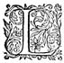
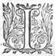
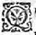

LE
TROISIESME
LIVRE DE
LA
TROISIESME
TROISIEME
PARTIE
DE L'ASTREE
de Messire Honoré d'Urfé.
Éd.
Éd. de 1619, 55 verso.
DAphnide admira cette gallerie
d'abord qu'elle y fut entree : mais plus encores quand elle l'eut consideree quelque temps : aussi la disposition des raretez en estoit si admirable, et la curiosité si merveilleuse, qu'elle se pouvoit dire sans pareille : car outre ce qui estoit des
Gaules, encor y avoit il tant d'autres singularitez des Provinces plus esloignees, qu'il falloit par force admirer et le soin de celuy qui les avoit assemblees, et le jugement qui les avoit si bien disposees : Entre les fenestres, les Provinces de la Gaule y estoient si bien representees, et avec de si justes distances que cartes en estoient parfaites, n'y ayant pas mesme esté oublié la remarque des lieux, où quelque chose de signalé avoit esté faicte, comme l'espouvantable siege d'Alexia, et les diverses batailles de Cesar : et par dessus ces cartes estoient les portraicts des Roys des Gaules, commençant au grand Samethes, et finissant à ce Francus, qui pour estre absent, laissa l'administration de ses Estats aux Chevaliers et Druydes de la Province : On voyoit apres, le grand Cesar, et de suitte tous les Empereurs jusques à Valentinian troisiéme, les Roys de la grande Bretagne, d'Alemagne et d'Espagne. Et ce fut sur ces derniers où Daphnide
de fortune arresta les yeux,
* LA galerie
η
où le sage Adamas conduisit Daphnide et Alcidon, estoit plus considerable pour les curiositez qui s'y trouvoient, que pour la magnificence de sa structure, parce qu'encores que les marbres des portes et des fenestres rendissent son bastiment fort beau et fort riche, et que les justes distances des jours, la reglee proportion de la hauteur et de la largeur y fussent exactement observees selon la longueur qu'elle avoit, et que les lambris et les dorures n'y fussent
point espargnees, si est-ce que le soing que le sage Druyde avoit eu de l'enrichir de toutes les choses plus rares que produitη
non seulement l'Europe, mais et l'Asie et l'Affrique, et non seulement de son temps, mais de tous les siecles passez, et desquelsη
la memoire n'estoit point entierement perduë, surpassoit de telle sorte la richesse du bastiment, que si le premier attiroit les yeux par sa beauté, l'autre retenoit les esprits en admiration de tant de raretez qui surpassoient mesme la pensee.
La voûte qui sembloit estre soustenuë sur une grande frise, estoit toute peinte des plus anciennes Histoires des Gaulois, depuis le Grand Dis
Samothes, jusques à ce Francus, qui pour estre absent et empesché à d'autres conquestes, laissa l'administration des Estats aux Druydes et aux Chevaliers
Gaulois. La n'estoit oublié le Grand Dryus, qui par l'institution des Druydes avoit laissé la religion et les loix de ses peres à ses futurs neveux : Ny aussi le pourtrait du Grand Hercule
Gaulois
quand il espousa la Princesse Galathee, et qu'avec son eloquenceη
et ses armes il attira les Gaulois à la civilité, et à la generosité par son exemple. Là se voyoitη
Sigovesus et Bellonesus
η
, dont l'un passant les Alpes vainquit et nomma la Gaule Cisalpine : et l'autre passant la forest Hircinie, fonda le Royaume des Boyens. Bref, on voyoit les Gaulois sous Brennus triompher dans Rome de ces grands Citoyensη
, et pesant l'or de leur rançon adjouster encore sur le poix l'espee victorieuse de leur vainqueur : et de là passant en la Grece, fonder les Galathes, et se
moquans des vaines superstitions de ces Idolatres, ravir l'or et les tresors du Temple d'Apollon, et s'en revenir victorieux en leur patrie.
Au dessous des frises dorees, et chargees de ce que les pays estrangers ont de plus rare, se voyoit une seconde frise, qui avec diverses sortes de festons
rapportoit
un tres-grand ornement à cet edifice : dans l'entre-deux comme dans des niches estoient placees les statuësη
des Empereurs Romains, le Grand Cesar jusques au troisiesme Valentinian.
Mais l'une des plus curieuses choses de ce beau lieu, estoit l'entre-deux des fenestres remplis des cartes de toutes les Provinces particulieres de la Gaule, si fidelement et si justement raportees, que l'on pouvoit en se promenant apprendre non seulement les distances des lieux, mais les situations des villes, les climats des Provinces, les cours des fleuves, les passages des rivieres, et la proprieté de chaque endroit de ce petit monde. Et pour faire remarquer encore plus la curiosité du Druide, onη
n'avoit point oublié dans ces cartes, ny bataille remarquable, ny siege d'importance, qui n'eust esté mis en l'endroit mesme où il avoit esté faict : de sorte que l'espouvantable siege d'Alexia, et toutes les signalees expeditions de Cesar se voyoient dans les mesmes lieux où elles avoient esté faites.
A l'entour de ces cartes, on voyoit les portraits au naturelη
des Princes qui avoient dominé ces Provinces de temps en temps :
de sorte que du costé de la seconde Belgique l'on voyait Pharamond, Clodion et Meroüee, et aupres de
luy, mais sans couronne, Childeric son fils, parce qu'il n'estoit pas encore Roy des Francs, son pere estant encore en vieη . En la carte des Sequanois et Heduois, l'on voyoit Athanaric, et sa femme Blisinde, qui encores qu'il n'eust jamais passé le Rhin, ne laissoit d'y estre mis comme pere du vaillant Gaudiselle premier Roy des Bourguignons, qui vint sur les rives de l'Arar et du Rosne : Aupres de ce Roy estoit sa femme la sage et pieuse Theudelinde. Apres eux leur fils Gundioch, qui le premier asseura veritablement sa Couronne dans les Gaules : et en fin Gondebaut avec ses trois freres, Chilperic, Godomar et Godegesile. Bref le Druyde avoit esté si curieux, qu'il estoit malaisé d'y desirer quelque chose qui n'y fust pas. De sorte que Daphnide, Alcidon et leur compagnie alloient admirant toutes ces raretez, comme les plus curieusement recherchees qu'ils eussent jamais veües. Et de fortune jettant les yeux sur la carte d'Aquitaine, la belle Daphnide y vid de suitte ces vaillans Visigotz qui y avoient regné. Depuis qu'elle les eust aperceus, il luy fut impossible d'en retirer la veuë, parce qu'elle recogneutcogneut et le nomles noms et le visage de plusieursquelques uns , et entre autres de Torrismond, de Thierry son frere, et du vaillant Euric, pres duquel elle se vitveit peinte, telle qu'elle estoit en l'aage de dix-huithuict ou vingt ans : elle tint longuement les yeux dessus, et apres les destournant sur le portraict d'Euric, elle ne se put empescher de souspirer, et de dire : - O grand Euric, que la journee fut mal-heureuse, qui te ravit à ton sceptre, et aux tiens, et que j'ay
bien occasion de te regretter, puis qu'il ne m'a esté permis de te suivre !
- Madame, repristreprit
Alcidon, il faut advoüer que la perte du grand Euric a esté generale, mais elle eut esté encore plus grande, si la vostre y eut esté adjoustee : Et pensez vous que les Dieux, en vostre conservation, n'ayent pas eu soing de moy ? Vous vous trompez Madame, car leur bonté est telle, qu'ils ne
rejettent jamais les justes supplications qui leur "
sont faitesfaictes .
- C'est dequoy je me suis estonnee, dit "
Daphnide, puis qu'ils ne les rejettent point, "
pourquoy la mienne
n'a pas esté exaucee, qui a esté faictefaite avec tant de justice et de raison : car y a-t'il rien de plus juste ou de plus raisonnable,
que d'accompagner en la mort celuy qu'on a "
tant ayméaimé en la vie ? Adamas qui prenoit garde "
que ce discours ne pouvoit qu'estre fort ennuyeux "
à cette belle Dame, l'interrompit en la conviant de s'asseoir, et la suppliant de vouloir conformer sa volonté à celle du grand Thautates, et de croire que toutes les choses estoient si sagement "
disposees par luy, que la prudence humaine "
estoit contrainte d'avoüer qu'elle estoit "
aveugle au pris de la sienne : Lors Daphnide, "
s'asseant aupres d'Adamas, et le reste de la compagnie, "
elle prit la parole de ceste
sorte.
"

JE sçay bien, mon Pere, que le
" grand Thautates faictfait toutes
" choses pour nostre mieux : car
" nous aymantaimant comme l'œuvre
" de ses mains, il n'y a pas apparence
" qu'il deffaille d'amitié envers
" nous : Mais si me permettrez vous de dire,
" que tout ainsi que les medecines que l'on faictfait
" prendre au malade pour sa santé, ne laissent d'estre
" ameres et difficiles à avaler : de mesme
" ces coups que nous recevons de la main du grand
" Dieu, encor qu'ils soient pour nostre bien, ne
" laissent d'estre bien pesanspesants à qui les reçoit,
" et que celuy qui se plaint de ce que Dieu ordonne,
" manque veritablement à ce qu'il doit : mais que
" celuy qui gemit, et se deult de l'aigreur des
" coups, ne fait que payer les tributs de sa foiblesse
" et de son humanité. J'avouë que les biens que j'ay receus de sa main sont sans nombre, et que les faveurs surpassent de beaucoup les adversitez
" que j'ay eües : mais d'autant que nous sommes
" plus sensibles au mal qu'au bien, je suis
contrainte de dire que les desplaisirs que j'ay receus m'ont presque effacé la memoire de mes bon-heurs. Et que pour ce sujectsujet , estant resoluë de me retirer des orages du monde, il n'y a rien
eu qui m'en ait empescheeempesché
η
,
que la poursuitte que ce Chevalier m'a faitefaicte , que je nomme importunité quand je parle à lui : mais qu'à vous, je puis avec plus de verité appeller du nom d'opiniatreté. Et parce que c'est l'occasion qui nous conduit en ceste contree, je vous supplie, mon pere, de me permettre de vous raconter ce qui s'est passé entre nous, afinà fin que la fontaineη
de la Verité d'Amour nous estant interditedeffenduë ,
nous puissions par vostre bon conseil et avis, sortir de la peine où nous sommes tous deux.
Sçachez donc, que
Thierry ce grand Roy des Visigots, estant si honorablement mort en la bataille donnee aux champs Cathalauniques contre Attile,
il laissa plusieurs enfans apres luy, non seulement successeurs à sa Couronne, mais à son courage, et à sa valeur ; celuycelui qui recueillit sa succession le premier, fut Torrismond son fils aisné : celuy cy estant receu et couronné dans ToulouseToulouze, fit dessein de mettre son principal estude, non seulement à estendre les limites de son Royaume, mais aussi à le rendre plein de Chevaliers et de Dames, les plus accomplis qu'il luy seroit possible. Et il sembla que le Ciel en mesme temps, se pleust d'aider et favoriser ceste volonté : car jamais Ataulfe ny Wallia, ses predecesseurs, ny mesme le grand Thierry son pere, n'avoit eu tant d'accomplis Chevaliers, ny tant de belles et sages Damesη
,
que ce grand et genereux Roy. Ma fortune
voulut qu'en ce temps-là, je fus menee à la Cour par ma mere qui y estoit retenuë, par les charges que mon pere y avoit : je ne pouvois avoir alors que quinze ou
seize ans : mais j'avouëray bien que je ne cedois à autre de mon aage, en la bonne opinion de moy-mesme, fustfut pour l'asseurance de ma beauté (que la flatterie des hommes qui m'approchoient, m'avoit donnee) fustfut pour l'amour que chacun porte à soy-mesme (qui me faisoit juger toutes choses plus parfaites en moy qu'aux autres) tant y a qu'il me sembloit que j'attirois les cœurs aussi bien que les yeux de tous ceux qui estoient en la Cour. Le Roy mesme, qui estoit l'un des plus acomplisaccomplis
PrincesPrince qui eust jamais esté entre les Visigots, n'avoit point desagreableη
de me voir, et de me caresser : mais d'autant qu'il n'y avoit point de conformité en nos aages, il se retira de moy, considerant bien que ceste amour estoit plus propre et convenable à un plus jeune qu'il n'estoit pas.
En ce mesme temps,
Alcidon estoit aupres de luy, et je puis dire sans le flatter, encor qu'il soit icy, que c'estoit le Soleil de la Cour, et que la beauté de son visage, la parfaite proportion de sa taille, son adresse, sa bien-seance en toutes choses, sa douce humeur, sa courtoisie, sa valeur, la vivacité et gentillesse de son esprit, sa generosité ; et bref tant d'autres perfections qui le rendoient recommandable, luy acqueroient au jugement de tous, l'avantage en toutes choses sur tous les plus relevez, et estimez de son temps. Aussi le Roy qui était infiniment desireux que sa Cour esclairast
par toute l'Europe, et que les grands et vertueux desseins de ses Chevaliers, la rendissent plus recommandable aux autres nations, voyant le merite d'Alcidon en cestecette tendre
jeunesse, en voulut bien prendre un soingsoin particulier, s'asseurant bien, que si ceste plante estoit soigneusement cultivee, il en naistroit des fruitsfruicts
si doux et si estimables, qu'il en recevroit du contentement, et sa Cour de la gloire.
Ne rougissez point, Alcidon, de m'oüyr parler de vous si avantageusement en vostre presence ; Je veux, dit-elle, se tournant vers luy, que vous sçachiez que la haine que justement je vous porte, ne m'empesche pas de voir ny de dire la verité ; et par ce qu'elle s'arresta, comme si elle eust voulu qu'il respondit : - C'est, dictdit -il, ce qui m'estonne, que vous voyez en moy des choses si cachees, que peut estre tout autre qui me cognoistra bien, vous contredira, et que vous ne vueillezvueilliez voir ny croire mon extréme affection, et mesme estant telle qu'autre que vous, qui me cognoisse, ne la peut ignorer. Et quand j'ay longuement debatu cela en mon ame, enfinen fin je n'en puis trouver autre raison, sinon que peut-estre vous estes de l'humeur de ceux qui loüent tousjours "
ce qui est à eux, et lors qu'ils s'en veulent deffaire, c'est lors qu'ils "
font paroistre de l'estimer d'avantageη
.
- Nous vuiderons, dit-elle, ce
differantdifferend une autre fois, et reprenant le fil de son discours, elle continua de cestecette sorte :
Torrismond ayant fait dessein de rendre Alcidon le plus accomply quiη
luy seroit possible, et sçachant bien que les plus belles actions, et les plus genereux desseins prenoient naissance de l'Amour, à fin de luy en mettre les semences en l'ame, il luy commanda de m'aimer et de me servir. Alcidon qui n'estoit pas si jeune (encor
qu'il n'eust à peine attaint la dix-et-huictiesme annee de son aage) qu'il ne jugeast bien quelle faveur le Roy lui faisoit, et que tout son avancement dependoit de luy obeyr, se resolut de ne manquer aucunement à ceste ordonnance, qui eut tant de force sur son ame, que comme si c'eust esté un arrest prononcéη mesme par le destin, il se donna à moy autant qu'en cetceste aage il le pouvoit estre. Et parce que pour nourrir la jeunesse en tous les honnestes exercices qu'il se pouvoit, le Roy faisoit tenir le bal fort souvent, avec des courses de bagues, des joüstes et des tournois ; il advint que bien tost apres qu'Alcidon eut receu ce commandement, le bal se tint en la presence de Torrismond et de la Royne. On avoit de coustume de se parer quand le bal se tenoit : de fortune ce jour là, comme si c'eust esté à dessein, et luy et moy, nous trouvasmes vestus de blancη . Et parce qu'il desiroit faire cognoistre au Roy combien il vouloit obeyr à ses commandemens, lors que le grand bal η commença, il me vint prendre ; de quoy le Roy s'aperceut, et remarquant que la jeunesse de l'un et de l'autre, ne nous permettoit pas la hardiesse d'oserde nous pouvoir parler l'un à l'autre, il s'en pristprit à rire, et dist à ceux qui estoient autour de luy : - Je ne sçay qui a assemblé ce couple, mais si c'est la Fortune, elle monstre en cela qu'elle n'est pas tant aveugle qu'on la dit, car je ne croy pas qu'il s'en puisse faire un plus à propos. Ils sont aussi innocentsinnocens que leurs habits le monstrent, et je m'asseure qu'ils n'ont pas eu encore seulement la hardiesse de se dire un mot. Et il avintadvint comme
le Roy le disoit : car le jeune Alcidon, soit par honte, ou que quelque estincelle d'amour qui commençoit de s'espandreépandre en son ame, le retint en ce respect)η
laissa passer tout le soir sans parler à moy, qui de mon costé estant encore sans dessein, ne l'y conviay point, mettant tout mon estude à estaler aux yeux de chacun, les beautez que plusieurs en me flattant me disoient estre en moy.
Depuis ce jour, ceste affection s'alla bien augmentant, et avec tant de force, que si Amour pour moy luy lioit le cœur, en eschange il lui deslioitdélioit bien la langue pour raconter et alleger son mal : et j'avouë que ses merites et ses services donnerent tant d'eloquence à ses paroles, que je fus enfinen fin persuadee qu'il m'aymoit, et peu apres qu'il meritoit d'estre aymé. Durant ce temps, il s'avança de sorte aux bonnes graces de son maistre, qu'il n'y avoit charge aupres de luy pour grande qu'elle fust, à laquelle il ne deust raisonnablement aspirer : Et d'effect, apres luy avoir donné un si libre accez aupres de sa personne, qu'il n'y avoit lieu si retiré qui luy fust interdit, il luy en donna une desη
plus belles de sa Couronne, encor que peut-estre son bas âgeaage en eust esloigné quelqu'un autre : mais
*Il est vray que
tant d'aimables perfections rendoient sa jeunesse si recommandable, que l'envie mesme de la Cour, ne blasma point l'eslection que le Roy en avoit fait. Mais, ô sage Adamas, dans le comble de ces prosperitez, ThorrismondTorrismond cogneut bien puispeu
apres, qu'il n'y a rien au monde de durable, et que "
la Fortune, qu'avec raison on peut peindre à "
" deux visages, afinà fin d'entremesler les maux
" aux biens, ne veut pas que les humains ayent tousjours
" la veüe de l'un seulement, mais
qu'au contraire
" elle leur monstre tantost l'un et tantost l'autre,
" selon qu'il luy plaist de se tourner. Car ce grand Roy
au milieu de son Royaume, et de toutes ses forces, fut malheureusement tué par un Myre, que les Romains nomment Cyrurgien. Ce meschant parricide *
tel peut-on bien nommer qui tüe le pere du peuple estant appellé pour tirer du sang auseigner le Roy,
au lieu de le saigner comme on a accoustumé, luy couppa de sorte la veine, qu'il ne put jamais estancher le sang, futsoit qu'il le fit par mesgarde ou par meschanceté : tant y a que le Roy voyant ce malheureux accident, de colere prist un couteau de la main gauche, et en tua le Myre : mais cela ne luy servit de rien, car il le suivit incontinantincontinent , et mourut bien tost apres, au grand desplaisir de tous ses subjetssujets .
Jugez, mon pere, si ceste mort inopinee ne fut pas bien effroyable aux plus asseurez, et à plus forte raison à ma mere, et à moy : elle fustfut cause qu'aussi-tost que nous pusmes, nous nous retirasmes en la Province des Romains, où estoit nostre bien et nos maisons, craignant quelque tumulte dans ce Royaume, privé d'un si grand Roy. Quant à
Alcidon, son desplaisir fut tel, que l'on croyoit qu'il ne vivroit pas, et sans que je le redie à ceste heure, il sçait bien que je ressentis ses ennuis, et regrettay sa perte, comme nostre amitiéη
me le commandoit, encores qu'il eust de telle sorte oublié et moy, et les promesses d'amitié qu'il m'avoit faitesfaictes , que je n'eus jamais de ses nouvelles durant tout ce temps. A Torrismond
succeda son frere Thierry, qui en mesme temps prist la Couronne des Visigots, et le desir de l'augmenter ; et pour en trouver sujet, ayant sceu que le Roy des Sueves vouloit estendre ses limites dans l'Espagne (quoy qu'il eust espouséη
sa sœur) il luy manda, que s'il ne se desistoit de ceste entreprise, il s'y opposeroit : dequoy
Richard ne faisant compteconte
(c'est ainsi que s'appelloitappeloit le Roy des Sueves) Thierry passa les Pirenees, le combatit, et le surmonta : Thierry estant mort fort tost apres, Euric son frere luy succeda, qui par sa valeur se sousmitη
presque tous ses peuples revoltez : Et apres voyant quecomme les Romains qui nous appelloient leurs anciens amis et confederez, nous vouloient sousmettre comme le reste des Gaules, il tourna ses armes vers nous, je veux dire en la Province des Romains.
Je ne m'arresteray point à vous déduire par le menu ses victoires : puis quecar cela sert fort peu à nostre discours : je me contenteray de vous dire qu'apres avoir prisqu'il prist la ville des Massiliens, il vintestoit venu assieger celle d'Arles, parce que jusques en ce temps là, je n'avois point eu de nouvelles d'Alcidon, et il n'avoit non plus eu de memoire de moy, que s'il ne m'eust jamais veüe. Mais alors comme s'il se fust esveillé d'un profond sommeil, il se ressouvint de m'escrire : Vous pouvez juger, mon pere, si un jeune courage comme le mien, je veux dire glorieux à outrance pour la bonne opinion que j'avois de moy-mesme, avoit ressenty ce long silence, que je ne sçaurois de quel nom appeller, ne me pouvant figurer que ce pustpeust estre mespris, me semblant que je valoisj'avois trop de merite
trop pour estre mesprisee :méprisee
Tant y a que pensant
plus souvent en luy qu'il n'avoit pas fait en moy, j'avois cent et cent autres fois juré de ne me soucier plus de luy, et que quand il reviendroit à moy avec toutes les sousmissions qui peuvent estre imaginees, je ne le regarderois jamais autrement que d'un œil indifferantindifferent . Et je ne nieray pas toutefois que ceste perte ne me touchast l'ame de quelque desplaisir, lors principalement que nos enfancesη
me revenoient en la memoire, et que je tournois les yeux sur le souvenir qui m'estoit resté de ses merites, et de ses perfections ; de sorte que quand je receus ses lettres, je demeuray irresoluë, si je devois les lire ou les renvoyer cachetees :cachettees
enfinen fin il le faut confesser, l'amour surmonta le dépit : car je l'avoüeadvoüe, je l'avois aiméaymé , et ne m'estois peu encore si bien retirer de ceste affection, que je n'y fusse assez engagee, pour me convier a sçavoir de ses nouvelles, et quel estat je pouvois faire de luy : je rompis donc le cachet, et leus telles paroles :

JE ne sçay, Madame, si vous ne recognoistrez plus cetteceste escriture, ou si vous aurez encores memoire du nom d'Alcidon, tant mes
malheurs m'ont longuement esloigné de vous, et m'ont empesché de vous en rafraichir la memoirefaire souvenir par quelque bon service. Si vous vous en souvenez encore, et sique la perte de deux maistres tant aymez, et les loingtains voyages, où les armes m'ont employé continuellement me peuvent servir d'excuse envers vous, je vous supplie, Madame, et par la memoire du Grand Thorrismond, et par la donation qu'il vous fit de moy, vouloir pardonner à mon silence, et au long-temps que je n'ay eu l'honneur de vous voir, attendant que je puisse par vostre permission vous faire sçavoir de bouche, les occasions qui m'ont privé de ce bien ; et si vous voulez surpasser entierement mes esperances par vos faveurs, ordonnez moy en quel lieu il vous plaist que je reçoive ce contentement : Et vous verrez qu'Alcidon ne fut jamais plus à vous qu'il l'est encores, et que les fruicts verdsvers qu'il vous dedia vous ont esté fidelement conservez jusques en cetteceste
saison, que vous le trouverez moins incapable de vous faire service, qu'en ce temps que vous luy fistes l'honneur de le recevoir pour vostre serviteur tres-humble.
Que c'est, sage
Adamas, que des flateriesflatteries dont Amour
abuse la jeunesse !
Je ne leus pas si tost ceste lettre, qu'encore que je sceusse bien le contraire de ce qu'il m'escrivoit, toutefoistoutesfois je ne consentisse incontinantincontinent à me laisser voir à luy. Il est vray, que craignant la legereté des hommes, et mesme des jeunes hommes : et particulierement celle d'Alcidon, de laquelle les tesmoignages estoient encor assez vifs en ma memoire, je fis dessein au commencement de ne me monstrer point si volontaire à sa premiere supplication, mais de le laisser un peu en ceste incertitude, afinà fin de luy
" en donner plus de desir, sçachant assez que l'amourη
" aspire tousjours à ce qu'il croit luy estre le
" plus deffendu ; et en ceste deliberation, je mis la main à la plume pour luy faire une desdaigneusedédaigneuse
responceresponse , et telle que son silence de deux ans pouvoit meriter : mais quelque demon, je ne sçay si je le dois dire bon ou mauvais, m'en empescha, me representant le merite d'Alcidon, sa jeunesse qui estoit excusable, les divers accidensaccidents qui estoient survenus durant ce temps là : et bref les dépits
η
qu'une affection mesprisee, fait concevoir en un jeune courage : de sorte que changeant mon premier dessein, je me resolus de le voir, en intention de luy faire apres payer cherement
sa faute, si de fortune je le voyois bien embarqué à m'aymer. En ceste resolution je luy escrivis telles paroles :

C
E n'est pas l'amour, mais la curiosité, qui me conseille de vous permettre de me voir ; ne prenez donc point le congé que je vous en donne à vostre avantage : mais soyez meilleur mesnager de la faveur que vous recevez d'elle, que vous n'avez esté de celles que vostre
enfance vous a faitfaict avoir de moy. Et Adieu.
L'armee pour lors estoit autour d'Arles, et le grand Euric ayant pris la ville des Massiliens, faisoit dessein de forcer celle-cy, et de se rendre maistre de toute la Province des Romains, et de ruiner et ravager tous ceux qui ne voudroient se sousmettre à luy. En cestecette resolution, il renforce son armee, et fait le degastdegat partoutpar tout où il n'a pas esperance que ses armes puissent attaindre :
ce fut lors que le Veniscin, les
Reyois
η
, les TricastiusTricastins, Arause, Albe des Helvins, ValenceValance et plusieurs autres sentirent la fureur de ses armes, cependant qu'il s'opiniastroit au siege de cestecette forte ville, qui comme chef de cestecette Province resistoit plus que tout le reste, tant pour sa force naturelle, que pour le grand nombre de gens de guerre qui s'estoit jetté dedans.
Quant à mon pere, lors que nous sortismes ma mere et moy de la CourtCour , apres la mort de
Thorrismond, il s'estoit retirése retira dans une place forte, qu'il avoit dans l'Aquitaine. La charge qu'il en avoit, et son âgeaage le luy commandant ainsi : car il avoit plus de deux siecles. Ma mere, qui avoit redouté la guerre pensant la fuïr s'en estoit venües'en estoit venuë, pensant la fuïr
dans ceste Province
la terre
des Romains, et ce fut là où depuis elle fut la plus forte. Il est vray que quand elle y vit venir l'armee du Grand Euric, elle se retira dans les extremitez du
Veniscin, le long de la riviere de Sorgues, où elle avait une maison assez bonne,
et une de ses sœurs mariee à quatre ou cinq lieuës de là, avec un Chevalier des principaux de la contrée.
Lors que je receus les nouvelles d'Alcidon, l'indisposition de ma merema mere se trouvoit mal qui
me donna commodité de pouvoir disposer plus librement de moy-mesme : car son mal procedant de son long aage, et non point d'autre maladie violente, à laquelle les remedes pussent
apporteraporter guerison, elle estoit bien aise que je me divertisse et passasse mon temps, tantost à me promener le long de la riviere, et tantost à visiter mes voisines, dont la pluspart estoient de mes parentes ou alliees.
Je manday donc de bouche à Alcidon par celuy qui m'aporta sa lettre, que s'il se trouvoit à
Lers, qui est un chasteau situé sur le Rosne, le quatriesme de la Lune suivante, je le verrois, et que je choisissois ce lieu là, parce que je sçavois bien que le maistre du logis estoit de ses amis, et serviteur du Roy Euric : mais qu'il y vint le plus secrettement qu'il pourroit, parce que si on sçavoit qu'il y fust, outre la fortune qu'il courroit, pour estre dans le pays de ses plus grands ennemis, encor ne me seroit-il pas possible d'y aller, pour ne donner sujet aux envieux de médire.
A ce mot la belle
Daphnide se teut pour quelque temps ; et comme si elle eust pensé à ce qu'elle avoit encor à dire, elle passa la main deux ou trois fois sur son front. EnfinEn fin , relevant le visage, et se tournant vers
Alcidon : - Je vouloisvoudrois
continuer, luy dictdit -elle : mais il est plus à propos, que tout ainsi que j'ay dit ce qui me touche, vous racontiez aussi ce que vous avez faictfait , afinà fin que le sage
Adamas oyant par nos bouches mesmes, ce qui est arrivé à chacun de nous, il puisse estre mieux asseuré de la verité. Alcidon alors respondit, - Vous me commanderez tout ce qu'il vous plaira, Madame, et moy j'obeïray tousjours à ce que vous m'ordonnerez plus promptement, et plus librement qu'il ne vous plaira pas de me le faire sçavoir : mais il me semble que vous blessez beaucoup la preud'hommie
de ce grand DruideDruyde, quand vous dictesdites qu'il aura plus de creance à mes paroles, quand je parleray de ce qui me touche, qu'aux vostres : estant tres-certain que vous sçavez mieux ce que je faisfaits , et que je pense
que moy mesme : puis que je ne faisfaits ny ne pense rien que par vous, et cela est si vray, que si vous aviez dictdit que ma vie fut une mort, je ne vivrois pas un moment, tant tout ce qui est de moy, est soubsmissousmis à tout ce qu'il vous plaist d'ordonner. Adamas alors prenant la parole, - Seigneur Chevalier, dictdit -il, si j'estois autant amoureux de ceste belle Dame que vous l'estes, ceste creance pourroit bien avoir quelque lieu : mais cela n'estant pas, il est certain que ce que vous me direz de vous mesme, me donnera plus d'asseurance de la verité : Et puis quepuisque
lasa
η
discretion vous en donne l'authorité, vous ne devez point en faire de difficulté.
- Comment, interrompit Daphnide, que je luy en donne l'authoritéautorité , non seulement cela : mais de plus, je le luy ordonne, afinà fin que suivant ce qu'il dictdit , il ne puisse me desobeyrdesobeïr sans encourir le blasme d'une personne qui ayme plus en paroleη
qu'en effect. Alcidon alors faisant une grande reverence : - Ce tesmoignage, dit-il, est bien foible pour esgaler le desir que j'ay de vous obeyrobeïr ; toutesfois, il n'y aura jamais rien qui me fasse contrevenir à vos commandemens. Et lors il pristprit la parole de ceste sorte.
- Je ne rediray point icy ce que ceste belle Dame a dictdit , ny moins veux-je entreprendre de m'excuser de ce qu'elle me blasme : car je m'asseure qu'il se trouvera quelque lieu plus commode, avant que ce discours finisse, auquel je pourray luy remonstrerremontrer mes raisons, et luy faire cognoistre la sincerité de mon affection, ou bien qu'elle me permettra quand j'auray finy
de raconter ce qu'elle m'ordonne, de me pouvoir deffendre, non pas contre elle, mais seulement contre les mauvaises impressions qu'elle peut avoir receuës de la calomnie dont je voy que mon innocence est accusee : Et par ainsi reprenant le discours où elle l'a laissé, je diray seulement que quand sa response me fustfut donnee, et que de bouche je sceus par celuy que je luy avois envoyé, ce qu'elle me mandoit, et qu'il ne tiendroit qu'à moy que je n'eusse
le bon-heur de la voir, jamais homme ne se creutcreust plus heureux, ny ne fut plus contant, ny plus satisfait de sa fortune que moy : Cent fois je releus et rebaisay la lettre qu'elle m'escrivoit, et cent fois je me fis redire ce qu'elle me mandoit, et à chaque fois j'embrassois ce fortuné messager : Et parce que c'estoit un homme en qui je me fiois grandement, et qui plusieurs fois m'avoit rendu preuve de sa fidelité : mais aussi s'il n'eust esté tel, je ne l'eusse pas employé à une affaire
qui me touchoit si vivement : Je luy faisois cent et cent demandes d'enfant,
ne me pouvant saouler de luy faire dire si elle estoit aussi belle que je l'avois veuë, si elle monstroit de m'aymeraimer , et sur tout s'il n'avoit point recogneurecognu qu'elle aymast quelquequelqu' autre chose. Et quand il me respondoit selon mon desir, je l'embrassoisη
avec un si grand transport, qu'il juroit ne m'en vouloir plus rien diredisoit qu'il ne vouloit plus m'en parler , puis qu'en luy faisant ces caresses, il craignoit que je ne l'estouffasse entre mes bras.
Lorsque
Thierry
mourut, il laissa sa Couronne, comme cetteceste belle Dame vous a desja dictdit , à
son frere Euric, Prince, qui pour ses grandes et vertueuses actions, acquist par le consentement de chacun, le tiltre et le surnom de Grand, et qui sembloit avoir esté conservé par le Genie de la
Gaule,
parmy tant de dangers, comme le seul des hommes capable de luy rendre et sa splendeur, et son repos. Or ce Prince ne succeda pas seulement à la Couronne de ses freres, mais aussi à leurs desseins et volontez : de sorte qu'il me prist en la mesme affection que
Thorrismond
" m'avoit fait paroistre, évenement qui est assez
" rare aux
changemenschangements des Princes, de qui les
" successeurs peu souvent affectionnent ceux que
" leurs devanciers ont aymez : toutefoistoutesfois , plus pour mon bon-heur que pour mon merite, j'eus cetteceste
fortune, que comme j'avois esté eslevé par
Thorrismond,
et maintenu par Thierry, je fus chery et favorisé du grand
Euric, non plus comme enfant, mais comme homme en aage de luy pouvoir rendre le service auquel ses predecesseurs m'avoient obligé. Et la bonne volonté de ce grand Roy m'avoit tellement rendu familier aupres de sa personne, qu'il y avoit fort peu de choses que je lui peusse celer, et moins ce qui estoit de l'Amour que toute autre : parce que ce Prince, encor qu'il fust grand en tout, surpassoit toutesfoistoutefois tous ceux de son aage en courtoisie et en Amour. CetteCeste fois ne pouvant ny ne devant esloigner son armee sans son
congé, je pris le temps qu'il estoit seul en son cabinet, où apres un petit sousris : - Seigneur, luy dis-je, trouverez-vous bon que je propose une entreprise que j'ay extrémement à cœur, et qu'ensemble,
je vous supplie de me permettre de l'executer ?
- Alcidon, me respondit-il, vostre courage vous porte tousjours à ce qui est le plus dangereux ; et je voudrois bien que vous fussiez meilleur mesnager de vous mesme que vous
ne l'avez pas esté jusques icy : Car encor que la fortune "
se fasse paroistre amie en quelques occasions, "
si est-ce qu'une personne prudente ne "
doit pas la tenter si souvent qu'il l'ennuye, ou "
luy donne sujectsujet de luy monstrer l'inconstance "
de son
humeur : toutesfois, dites-moy quelle est "
cetteceste
entreprise ;
Et d'autant que j'ay plus d'experience que vous, s'il y a apparence qu'elle se puisse faire, je le vous
diray, ou bien je vous enseigneray comme elle devra estre disposee.
- Seigneur, luy repliquay-je en sousriant, si c'estoit de Mars
que cetteceste
entreprise
despenditdépendit , je croirois bien recevoir de vous, en la vous
proposantdisant l'instruction qu'il vous plaist me promettre : mais ne voulant en ce dessein qu'Amour pour guide, Amour dis-je, qui est aveugle et enfant, il n'y a pas apparence d'y demander l'ayde de vostre prudence ny experience. Le Roy alors en m'embrassant, - Ny mesme en cela, dit-il, Alcidon, mes advis ne vous seront point inutiles : car, comme vous sçavez, je ne suis pas moins soldat d'Amour
que de
Mars. Et sur ce propos, me prenant par la main, il ne me laissa en repos, qu'il n'eust apris de moy le nom de Daphnide, et le lieu où je devois aller : il l'avoit souvent ouy nommer, mais il ne l'avoit jamais veuë, et sçavoit forttresbien
bien par le rapport qu'on luy en avoit fait, que c'estoit une tres belletresbelle Dame : cela
fut cause qu'au lieu de me distraire de mon dessein, il m'offrit non seulement de m'y faire assister, mais de m'y accompagner luy-mesme : Et lorsqu'il vit que je n'y voulois point consentir, il m'ordonna d'y aller avec peu de personnes : mais sur de bons chevaux, et avec desde gens qui n'eussent point de peur dude peril, parce que d'y aller fort accompagné, c's' estoit donner trop de cognoissance à l'ennemy de mon passage. Que sur tout je ne sejournasse dans aucune ville ny bourg : mais que je me resolusse de marcher d'une traicte. ou bien de repaistre dans quelque bois, en cas de necessité :
- Mais, me dictdit -il, souvenez-vous, si cetteceste belle vous fait paroistre de la bonne volonté, de ne perdre point l'occasion : car outre que l'incommodité de la guerre vous empeschera de la voir fort souvent, et ainsi vous
" ne pourrez recouvrer les occasions perduës,
" encores faut-il que vous sçachiez qu'il y a une certaine
" heureη
en la volonté des femmes, que si
" on la rencontre, on obtient tout ce qu'on
leur
" peut demander, et au contraire si on la perd sans
" s'en servir, jamais plus, ou pour le moins fort rarement,
" se peut-elle
recouvrer. Apres ces conseils d'Amour et plusieurs autres, qu'il seroit trop long à raconter, il me donna congé de partir.
Le Chasteau de
Lers, où
Daphnide avoit choisi le lieu de nostre entreveuë, estoit situé sur le bord de ce grand fleuve du Rosne, dans le
Veniscin ; et à la verité ç'avoit esté avec beaucoup de jugement, que cetteceste belle Dame avoit faictfait
cetteceste eslection, parce que le Seigneur de ce lieu-là
estoit serviteur, et officier du Roy
Euric,
et le servoit en son armee, en ce qui concernoit les Machines de guerre, ayant commandement sur les Cathapultes, Belliers et Janclides, et autres tels instruments, et de plus, estoit mon amy fort particulier. La femme de ce Chevalier estoit en quelque sorte parente de Daphnide, si bien qu'il estoit presque impossible de choisir un lieu plus commode, n'y ayant qu'un seul mal, que pour y aller de nostre armee, il faloit faire dix ou douze grandes lieuës, et tousjours dans le pays de l'ennemy : et quoy que le peril fut grand, si est-ce qu'Amour, qui me commandoit ce voyage, me fit clorre les yeux à tous les dangers que je pourrois courre pour luy obeyr.
Je prends donc avec moy celuy qui m'avoit apporté la responce de cette belle Dame, tant pour l'asseurance que j'avois en luy, que pour me servir de guide, parce qu'il sçavoit fort bien tous les chemins de cette contrée, y ayant esté eslevé et nourry ; et afinà fin d'obeyr à ce que le Roy m'avoit commandé, je ne pris avec luy que deux autres Chevaliers ; et ainsi tous quatre bien montez, nous nous mettons en chemin une heure apres disner et sans estre recognus de personne, car nous avions pris d'autres habits ; nous commençons nostre voyage, sous la faveur d'Amour, qui fut bien telle, qu'apres avoir marché le reste du jour et toute la nuict suivante, sur le lever du Soleil, nous arrivasmes à
Lers, où la maistresse du logis me receut avec tant de courtoisie, que je creus au commencement qu'elle fust avertie du dessein qui me conduisoit :
mais peu apres je recognusrecogneus qu'elle n'en sçavoit rien, et que toute la bonne chere qu'elle me faisoit ne procedoit que de l'amitié qu'elle sçavoit que son mary me portoit ; car elle monstra une trop grande curiosité de descouvrir le sujet de mon voyage. Cela fut cause que pour le cachercouvrir mieux, je luiluy fis entendre que je marchois pour une affaire de tres-grande importance au service du Roy, et que n'osant aller de jour, de peur d'estre recogneu, je la suppliois de ne vouloir point dire mon nom, et de commander que la porte dedu
chasteau se tint tousjours bien fermee, et que la nuict estant venuë, je partirois le plus secrettement qu'il me seroit possible. Elle comme tres-avisee, et tres-desireuse que le Roy, avec lequel son mary estoit, fust bien servyservice du Roy, avec lequel son mary estoit, se fit mieux ,
y donna tel ordre, que fort peu de personnes sçavoient dans sa maison mesme, que je fusse
Alcidon, et d'autant plus que j'avois changé de nom
en entrant.
Desja la moitiémoictié du jour estoit passee, sans que j'ouisseoüysse aucune nouvelle de cetteceste belle Dame, ou pour le moins, si le jour n'estoit point tant avancé, il me sembloit bien, tant que je trouvois l'attente longue, qu'il fut encores plus tard, et j'en avois une telle impatience, qu'il estoit bien mal aisé qu'elle ne fust recognuë pour peu que l'on eust eu
de cognoissance de mon dessein. Apres avoir quelque temps supporté cetteceste peine, le desir que j'avois de devancer par la veüe le bonheur que j'esperois recevoir ce jour là me fit monter au plus haut d'une tour, faignant de vouloir descouvrir le payspaïs . Il n'y eust petit hameau
autour de nous, bois ny coline, de qui
je ne demandasse le nom, ny isle dans le Rosne, ny rocher de qui je ne m'enquisse, me semblant de mieux couvrir mon inquietude : mais rien ne me pouvoit contenter, quoy que ceste vertueuse Dame fitfist veritablement tout ce qui luy estoit possible, pour me rendre ce sejour moins ennuieux.
Enfin, apres une longue, et tres-longueη
attente, et lors que je commençois de desesperer de mon bien, je vis venir un chariot du costé par où je sçavois qu'elle devoit arriver, et le monstrant à ceste honneste Dame, elle demeura quelque temps à le considerer : enfin s'estant un peu plus approché, elle se tourna vers moy. - Si je ne me trompe, me dit-elle, ce chariot vient icy, et si c'est celuy que je juge, vous y verrez l'une des plus belles filles de ceste contrée :
- Et qui est-elle ? luy respondis-je assez froidement.
- Je ne sçay, me dit-elle, si vous ne
l'avez jamais veüe avec sa mere en la Cour du Roy Thorrismond : mais si cela est, je m'asseure que vous vous souviendrez bien de son nom : car encor qu'elle soit ma parente, je ne laisseray de dire avec verité, qu'il n'y avoit rien de plus beau qu'elle, encore qu'elle ne fust en ce temps-là qu'un enfant : C'est, continua-t'elle, la jeune Daphnide ; A ce mot, je fis semblant de ne m'en souvenir que fort peu, et puis tout à coup, - Si fay, si fay, luy dis-je, je m'en souviens, elle avoit son pere et sa mere, avec laquelle elle demeuroit : car elle n'estoit pas des filles de la Royne.
- Elle n'en estoit pas, dit-elle, pour un sujet que peut-estre vous n'aurez
pas sçeu : car vous estiez trop jeune : mais en effect, c'estoit une pure jalousie de la Royne, qui avoit opinion que Thorrismond la vit de trop bon œil, et toutefoistoutesfois je vous asseure qu'en ce temps là ce n'estoit qu'un enfant, comme vous jugerez bien lors que vous la verrez : car il n'y a rien de si jeune qu'elle est encores. - Comment, luy dis-je, Madame, je vous supplie que je ne la voye point, de peur que je ne sois descouvertdécouvert , et que mon entreprise ne soit rompüe : car si cela arrivoit, outre la fortune que je courrois, encor feroy-je un fort mauvais service au Roy mon maistre, qui pretend faire un grand effect sur ses ennemis par ce moyenη . Elle respondit alors que je n'eusse point de crainte de cela, tant parce que Daphnide à sa priere le tiendroit secret, que parce que son pere, comme je sçavois, estoit si affectionné serviteur du Roy, qu'elle n'avoit garde d'y faillir. Moy qui mourois d'envie de la voir, je feignois toutefoistoutesfois de me laisser emporter à ceste persuasion, et enfin je luy dis : - Je suis tant serviteur de toutes les Dames, que je ne me puis imaginer qu'il y en ait une seule qui me vueille faire mal ; Et puis estant si belle que vous me dites, je ne croiray jamais qu'il m'en puisse avenir un plus grand que de ne la voir point. A ce mot, on vit que le chariot prenoit le chemin de la porte, qui nous asseura que c'estoit elle : et la maistresse du logis toute réjouyeresjouye de si belles hostesses, me prenant par la main, me dit : - Ne vous plaist-il pas que nous l'les allions recevoir ? - Allons, luy dis-je en sousriant, allons nous remettre entre ses mains, peut
estre que ceste sousmission nous garentiragarantira
mieux que la resistance, puisque c'est ainsi que "
les ames genereuses
sont surmontées plus aisément. "
Avec semblables discours, nous donnasmes presque le loisir à ces belles Dames d'entrer dans la basse-court du Chasteau, où la maistresse du logis les alla recevoir, et leur disoit à l'oreilleaureille ,
l'hoste qu'elle avoit chez elle, et qu'elles sçavoient y estre aussi bien qu'elle mesme, je dis elles : parce qu'avec la belle
Daphnide, il y avoit deux de ses sœurs fort belles, mais non toutefoistoutesfois approchantes à la beauté de ceste belle Dame. Quant à moy, j'estois retiré dans une salle basse, d'où je faisois semblanssemblant de n'oserozer sortir pour n'estre apperçeu, mais il fustfut tres-à propos pour ne descouvrir ma passion, que je fusse seul à leur arrivee, parce que j'estois de sorte transporté, qu'il eust esté bien mal-aisé qu'on ne s'en fut apperceu pour peu qu'on eust voulu remarquer mes actions ; et mesme quand elles commencerent de sortir du chariot : car la premiere qui mit pied à terre me sembla si belle, et il y avoit si long temps que je n'avois veu
Daphnide, que j'avoüe que je disois en moy-mesme, c'est celle-cy : puis voyant la seconde plus blanche encore et plus belle, je me reprenois, et me sembloit que c'estoit celle-là : mais je ne demeuray pas long temps en ceste erreur : car incontinent apres ceste belle Dame se fit voir, qui me ravit de telle sorte, que je ne sçay ce que j'eusse fait, si j'eusse esté en lieu où il m'eust fallu contraindre : Mais les ceremonies qu'elles firent ensemble
à leur rencontre, et les baisers qu'elles se donnerent, furent cause que j'eus le loisir de me remettre un peu. Si bien que quand elles entrerent dans le logis, je m'estois tellement r'asseuré, qu'apres les avoir salueées, je peus dissimuler mon émotion ; et lors m'adressant à celle qui d'abord avoit repris sur mon ame toute l'auctorité qu'elle y souloit avoir, et plus grande encore, je luy dis : - Madame, puisque la Fortune l'a voulu ainsi, j'avoüe que je suis vostre prisonnier ; - Seigneur Chevalier, me respondit-elle fort haut, nous ne refusons point cét advantage sur vous : mais nous aymerions mieux que nostre merite nous l'eust acquis, que nostre fortune. - Vostre merite, repliquay-je, vous en peut donner de beaucoup plus grands, et la fortune vous donne celuy-cy, comme estant trop peu de chose pour vostre merite. - Si ay-je cru autrefois le contraire, dit-elle d'une voix plus basse, lors que vous me faisiez ces mesmes asseurances : mais avec des paroles qui monstroient plus de sincerité, que celles dont vous usez maintenant. - En ce temps là, respondis-je, la presomption de la jeunesse me persuadoit ce que je vous disois : mais maintenant que j'ay plus de cognoissance de ce que je vaus, j'en parle aussi avec plus de verité. Que si toutesfois vous voulez qu'il soit ainsi, il faut dire que justement la fortune vous redonne ce qui estoit desjà à vous. - Cela, adjousta-elle en sousriant, n'est pas sans difficulté, cependant pensez de quelle sorte vous payerez vostre rançon pour sortir de nos mains : car il ne faut point que vous esperiez d'avoir liberté par
autre moyen.
- Le prix de ma rançon, repliquayreliquay -je, pour excessif qu'il soitpeut estre , ne me sçauroit estre si difficile à trouver, qu'à faire prester
consentement à mon cœur de vouloir sortir de vos mains :
- Et quoy, dit-elle en sousriant, vous vous souvenez encore de l'escole du Roy Thorrismond, et des propos dont vous souliez entretenir les Dames en ce temps là ?
- Aussi luy dis-je, le dois-je faire avec vous, puis que vous aussi vous usez des mesmes yeux et des mesmes beautez dont vous souliez vaincre tous ceux qui vous osoient regarder.
- Je pensois, respondit-elle, que des personnes toutes de fer et de sang, comme sont ceux qui suivent le Roy Euric ne parlassent que de meurtre et de carnage : mais, à ce que je vois par tout où est
Alcidon, il est tousjours
Alcidon : c'est à dire, la mesme
courtoisie et la mesme
civilité : Et à ce mot elle entra dans la salesalle avec toute la compagnie.
Les premieres ceremonies estans passées, nostre courtoise hostesse nous faisant apporter des sieges, je croy que par civilité, et non pour autre dessein, elle m'en fit donner un aupres de
Daphnide, un peu reculé du reste de la compagnie ; de sorte que me voyant en lieu où je pouvois parler plus librement, et l'affection, et mon devoir me convierent d'entrer sur les remerciemens, pour la faveur que je recevois d'elle en ceste entre-veuë. Mais lors que je voulus ouvrir la bouche, elle m'interrompit avec un visage severe, et me mettant la main sur les miennes, elle me dit : - Vous ne devez pas croire
Alcidon, que vous me soyez obligé de ceste visite, car je ne la
vous ay accordee que pour vous punir, sçachant bien que pour peu que vous m'ayez aymée en mon enfance, vous mourrez maintenant d'amour, me voyant telle que je suis. C'est veritablement le sujetsubject qui m'a fait prendre la peine de venir icy, je veux dire pour vous chastier, et non pas pour vous gratifier : car puis que vous vous estes rendu tant indigne des faveurs que vous avez receuës de moy, j'ay voulu espreuver si les chastimens vous feroient mieux recognoistre et ce que vous me devez, et ce que vous vous devez à vous mesmes. Vous semble-t'il, oublieux que vous estes, que cette beauté que vous voyez devant vous merite, ayant esté aymee par vous, et mesmes ayant eu tant de tesmoignages de sa bonne volonté, vous semble-t'il, dis-je, qu'elle merite d'estre mise en oubly, et que deux ans se soient escoulez sans que vous en ayez eu memoire ? Pensez-vous, infidelle, qu'un silence si long puisse estre excusé par les incommoditez et les miseres du temps ? et qu'il n' y ait ny rigueur, ny cruauté de guerre qui me puisse persuader que ce ne soit unpar
deffaut d'affection, et non pas d'occasion ? si jamais je n'ay eu nouvelle de vous ? Je scay bien que si je le vous
permets, vous ne manquerez pas d'excuse, et qu'il ne tiendra qu'à moy que je ne croye que ce silence est un tesmoignage de vostre affection,
" parce que je sçay bien que c'est l'ordinaire de
" ceux qui ayment fort peu, de dire beaucoup, mais je vous deffends de parler, non pas que je craigne que vous me persuadiez ce que je disη
,
je suis assez resoluë à ne vous croire point : Mais parce que je ne veux pas mesme que vous ayez
ce contentement de dire devant moy quelque chose qui vous soit si agreable, que vous seroient les excuses dont vous useriez en cestecette occasion,
et par là vous cognoistrez que cestecette veuë, de "
laquelle vous pensez m'estre obligéobligee, ressemble au "
sucre empoisonné, qui avec sa douceur ne laisse de donner la mort. Je voulus respondre : mais je n'ouvris pas si tost la bouche, qu'en m'interrompant elle me dit : - Et quoy
Alcidon, vous vous souciez aussi peu de me desobliger en ma presence, que vous avez fait en mon absence ? ce n'est pas le moyen de vaincre
Daphnide.
- Que vous plaist-il donc, luy dis-je, que je fasse ?
- Souffrez, dit-elle, et taisez-vous. C'est ainsi que par le silence se doit expier le peché de vostre silence. A ce mot je me teus pour luy obeyr, monstrant toutesfois par mon visage combien je souffrois de peine de ne pouvoir parler en ma deffence : Elle au contraire, monstrant un œil plus favorable, apres s'estre teuë quelque temps, reprit ainsi la parole :
- Ceste
Daphnide
que vous voyez devant vous, oublieux
Alcidon, c'est celle-là mesme à qui vous fistes les premiers sermens de fidelité, et qui la premiere aussi vous donna la foy que vous luy demandastes, de vous aymer autant qu'elle vivroitviveroit , c'est celle-là de qui vous avez si souvent moüillé la main de vos larmes encores innocentes, lors qu'elle faisoit semblant de ne vous croire pas, ou qu'elle estoit un peu lantelente à vous respondre, avec d'aussi grandes asseurances de bonne volonté, que celles que vos paroles lui donnoient. Mais elle se peut bien dire aussi à
vostre confusion, qu'elle est la seule qui a sceu conserver sans tache la foy qu'elle vous avoit donnée, puis qu'encores qu'elle ait eu tant d'occasion de vous laisser, que dis-je laisser ? mais de vous haïr :hayr Elle a toutesfois tousjours continué de vous aimer, et de cherir en son ame les agreables asseurances que vous luy aviez donnees : et quoy qu'elle ait eu tant de sujetsubjet de se desabuser, jamais son cœur n'y a peu consentir, ayant resolu de plustost quitter la vie, que les gages si chers que vous luy aviez donnez de vostre amitié. Ces yeux qui ont esté si souvent idolatrez par le jeune Alcidon, sont tesmoins qu'encores qu'ils en ayent esté privez si longuement, n'ont jamais veu tarir la source de leurs larmes, quand je me suis si souvent ressouvenuë de nostre enfance et de vos jeunes promesses, que je voyois si trompeuses lors qu'en tant d'années ou plustost de siecles, vous n'avez pas eu memoire d'une personne à qui vous aviez promis un eternel souvenir. Oyez Alcidon, oyez quelle a esté ma vie, depuis la mort de ce grand Roy, à qui vous et moy avions tant d'obligation : et vous jugerez que vous estes le plus injuste de tous ceux qui vivent, et que vostre silence vous auroit rendu indigne de l'amitié de toute sorte de personne, si mon affection n'estoit encore plus grande que vostre offence.
Alors elle commença de prendre depuis le commencement de nostre separation, jusques à ceste entreveuë, ne laissant en arriere
une seule occasion où elle avoit peu sçavoir de mes nouvelles, pour me reprocher l'oubly dont elle
m'accusoit ; et au contraire pour me tesmoigner la memoire qu'elle avoit eueuë de moy, elle me raconta presque tout ce qui m'estoit arrivé de plus remarquable, et lors qu'elle eut longuement continué, et que veritablement je demeurois estonné qu'elle en sçeut tant de particularitez : - Vous estes esbahy, me dictdit -elle, que je vous raconte de cetteceste sorte vostre vie : mais si vous eussiez esté tel que vous deviezdevriez estre, c'eust esté par vous que je l'eusse apprise, non pas par quelque autre, et par ainsi ce qui est maintenant tesmoignage du deffaut de vostre amitié, l'eust esté de la durée de vostre affectiondu contraire ,
parce que le soing que vous eussiez fait paroistre de sçavoir de mes nouvelles, et de me donner des vostres, eust esté un aussi glorieux tesmoing de vostre amour, que vostre silence a esté un signe honteux de vostre oubly.
Elle continua de cetteceste sorte en ses reproches, et à me raconter et sa vie et la mienne, plus d'une heure durant, sans que jamais elle me permist d'ouvrir la bouche pour ma deffence, ny pour luy respondre. Enfin cetteceste orgueilleuse beauté pensant avoir tiré assez de preuve de la puissance qu'elle avoit sur moy, changeant tout à coup et de visage et de parole : - Maintenant, me dit-elle, Alcidon, je vous permets de parler, me contentant de vous avoir osté la parole de
deux heures durant en me voyant, en eschange des deux ans que volontairement vous avez esté muet pour moy en mon absence.
- C'est bien, luy dis-je en sousriant, user d'une grande bonté, que de changer les annees en des heures.
- Je l'avoüe,
me repliqua-elle, mais c'est d'autant que la faute que vous avez commise est telle, qu'aussi bien ne sçauroit-elle estre esgalee par quelque grandeur de supplice, que l'on vous peust donner, et qu'aussi bien je me veux monstrer autant pitoyable envers vous, que vous me recognoissezrecognoissiez maintenant puissante à vous punir si je le voulois. - Madame, luy dis-je alors, que je baise vos belles mains, pour remercimentremerciement de tant de faveurs et de graces que vous me faictes :faites si je n'avois peur qu'on ne s'en aperceustapperceust , je me jetterois à vos pieds, pour vous tesmoigner combien je reçois de bon cœur l'honneur que vous me faictes :faites mais ne l'osant pas, vous recevrez la volonté que j'en ay, au lieu de cetteceste sousmission, et pour ne point contredire le jugement que vous en avez faictfait , j'avoüe, ma belle Dame, la faute dont vous m'accusez : mais si vous me permettiez de vous dire, non pas pour ma deffence, mais pour la verité seulement, l'occasion qui m'a rendu muet, peut-estre jugeriez vous que je serois aussi tost digne de loüange que de blasme. - Maintenant, dictdit -elle, que je vous ay pardonné, et donné permission de parler, vous pourrez dire tout ce qu'il vous plaira, *et Dieu vueille que vous ayez de si bonnes raisons, que je puisse estre persuadee que vous m'ayez tousjours aymee, comme vous m'aviez promis. - Je diray donc, continuay-je, qu'ayant receu l'extreme déplaisirdesplaisir que vous pouvez bien penser que je ressentis, par la mort de ce maistre qui m'avoit tant aymé, et relevé par ses faveurs presque par dessus l'envie de ceux de mon aage,
je jugeay que j'offencerois grandement sa memoire, et que cetteceste offence seroit avec raison estimee ingratitude, si je souffrois que quelque petite espece de contentement s'aprochast seulement de mon ame, tant s'en falloit que je deusse ny rechercher, ny recevoir les grands plaisirs, ou les grandes joyes. Si vous avez creu quelquefois que le jeune Alcidon ait aymé passionnément la belle Daphnide, vous me ferez bien l'honneur, Madame, de croire aussi que le contentement de sçavoir de ses nouvelles devoit estre l'un des plus grands qu'il peust recevoir en ce temps la : Mais puis qu'en ce temps de dueil nous ne permettons pas mesme à nostre corps de s'habiller autrement que de noir, pour ne mettre rien autour de nous, qui ne tesmoigne et ne nous represente nostre tristesse, à plus forte raison ce triste et desolé Alcidon devoit-il pas, pour esloigner toute resjouyssance de son ame, se priver de ce contentement, et de tout celuy qui luy pouvoit venir de vous, qui estes tout son bien et toute sa felicité ? J'esleus donc, pour satisfaire à mon devoir et à mon affliction, de m'interdire l'honneur de vos nouvelles, afin de ne voir ny n'ouyr rien qui me peust divertir de ma tristesse : Mais Amour sçait, et ce miserable cœur aussi qui vous aimeayme , ou plustost qui vous adore, si de tous mes plus cuisanscuisants ennuis, il y en a eu un seul qui luy ait esté plus sensible, que celuiceluy de se voir esloigné et de vostre presence et de vostre memoire. Et deux choses principalement vous le doivent tesmoigner. La premiere, que si ce n'estoit la passion que j'ay pour
vous, l'aage où je suis ne me permettroit pas de vivre, comme j'ay faictfait solitaire et sans amour, parmy un si grand nombre de belles Dames. Et l'autre, qu'aussi-tost que le temps par ses diverses revolutions, a guery en quelque sorte l'extreme regret que la perte que j'avois faite m'avoit donné, la continuelle pensee que j'avois de vous, ne m'a jamais laissé en repos, que je n'aye eu l'honneur de vous voir, sans que le danger des chemins, et sans que l'esloignement du Grand Euric, qui ne cede point envers moy à la bonne volonté que Thorrismond m'a faictfait paroistre, m'en aitayt peu empescher : Me voicy donc, Madame, à vos pieds, pour vous resigner toutes mes affections et toutes mes pensees, et pour vous supplier de les recevoir, non pas comme un present nouveau, ou une nouvelle aquisitionaquisition , mais comme une chose qui est vostre dés qu'encor enfant,
mon destin, mon maistre, et mon cœur me donnerent à vous : - Je reçois, me dit-elle avec
" un visage assez riant, je reçois vostre excuse,
" comme on faictfait d'un mauvais payeur, le payement
" d'unune
debte,
quoy que la monnoyeη
soit un peu legere : et je veux croire ce que vous me dites, à condition que jamais à l'avenir, vos actions ne me donneront sujet d'en douter.
Lors que je voulus luy respondre, je fus interrompu par la maistresse du logis, qui nous vint advertir qu'il estoit heure de souppersouper , nous remismes donc le reste de nostre discours apres le repas, qui ne fut pas si tost finy, que feignant par civilité de vouloir entretenir l'une de ses sœurs, elle s'aprochaapprocha de nous, et m'ayant un peu separé
des autres, nous reprismes les mesmes devis que nous avions laissez : mais avec tant de contentement pour moy, que j'avouë n'en avoir jamais eu auparavant un plus grand ; une partie du soir se passa de ceste sorte : enfinen fin l'heure du repos nous contraignant de nous separer, nous advisasmes qu'il n'y avoit pas grande apparence pour une entre-veuë si courte, d'avoir fait un si dangereux voyage, outre que nous prevoyons bien, qu'il seroit mal-aisé de nous revoir de long temps, et toutesfoistoutefois estant contrainteη de partir le lendemain, pour ne donner soupçon à nostre hostesse, nous fusmes longuement en peine de choisir quelque lieu qui fustfut commode. En fin elle me dit, mais avec une parole assez douteuse, - Je ne voudrois pas Alcidon, vous mettre en danger, mais, puis que vous m'en pressez si fort, je vous diray bien que j'ay une sœur mariee à cinq ou six lieuës d'icy, où nostre entre-veuë se pourroit bien faire, si ce n'estoit que mon beau frere est fort ennemy du Roy Euric, et toutesfoistoutefois s'il n'y avoit encores que ceste difficulté, nous y pourrions remedier, mais vous diriez que c'est par malheur, qu'il s'y faictfait une grande assemblee pour le mariage d'une de ses sœurs, et voyez comme toutes choses nous sont contraires : Je ne pense pas qu'en toute cette Province il y ait un seul Chevalier qui ne soit ennemy du Roy vostre maistre. J'avoüe, mon pere, que je trouvay ce dessein un peu dangereux : mais quand je me representois qu'il n'y avoit que ce moyen d'estre auprés de ceste belle Dame, je ne trouvois point de peril qui ne
fustfut moindre que celuy de son esloignement, cela fut cause que je luy respondisrespondois : Que jamais le danger ne seroit ceceluy là qui me feroit perdre une heure de sa veuë, pourveu qu'elle me le commandast, que seulement je la suppliois de me faire guider, et de donner ordre que quand je serois dans le logis, je ne fusse veu de personne : car je m'asseurois que sous son favorable commandement, il n'y auroit rien qui me peust nuire.
Avec ceste resolution, nous nous separasmes, et le matin m'ayant laissé un des siens, qui luy estoit tres-fidelle, elle partit sans que j'eusse l'honneur de la voir, expres pour oster tout soupçon à nostre hôtessenostre hostesse , et pour avoir plus de loisir à pourvoir à ma seureté. Quant à moy je partis sur les trois heures du soir avec ma guide, apres avoir fait les remerciemens à mon hostesse, ausquels sa courtoisie m'avoit obligé. Je ne raconteray point icy la fortune que je courus par les diverses rencontres que nous fismes, parce
" qu'Amour me garantit de tout mal, monstrant
" assez par là qu'il commande aussi bien au Dieu Mars, qu'à tous les autres. Le lieu où je fus conduit estoit bien l'un des plus solitaires de toute ceste contree, et tel qu'il falloitfaloit veritablement pour cacher les entreprises d'un Amant. Le long de ce grand fleuve du
Rosne on trouve un grand nombre de belles villes, qui semblent prendre plaisir de se mirer dans ses ondes, et de contraindre en plusieurs endroits la furie de sa course. Mais l'une des plus belles et des mieux peuplees, c'est
Avignon, à cinq ou six lieuës de
laquelle, du costé d'Orient, s'estend une valéeη
,
qui pour estre close de trois costez par des hautes colines et de grands rochers, fut au commencement appellee
Val-Close, et enfin par "
corruption du langage, duquel le vulgaire ignorant, "
est tousjours le maistre,
elle fut nommee Vaucluse, du bout de ceste valée, et sous les pieds de certains grands et espouventables rochers, soussourd
η
une fontaine merveilleuse, qui donne commencement à la riviere de Sorgues, qui fort peu loing de là se separant en deux bras, fait comme une petite isle, où est situee la maison où je devois aller, et qui pour estre assise entre ces deux ruisseaux, et environnee de leurs claires ondes, a pris le nom de l'Isle. Le lieu d'où ceste fontaine sort est à la verité pour sala
solitude en quelque sorte venerable, mais un peu horrible pour les rochers qui y sont tout à l'entour, et pource fort peu frequentee des personnes. Et ce fut là où ma guide me fit mettre pied à terre, et laisser tous ceux qui estoient venus aveavec moy, qui le firent avec un grand regret, et par mon commandement. De cette source jusques à l'Isle il y a un peu plus d'un quart de lieuë, traitte que je fis avec d'autant plus d'incommodité, que je marchois à pied et de nuict, et avec des
doubtesdoutes et des incertitudes si grandes, "
qu'Amour faisoit bien paroistre en moy, que non "
seulement il est aveugle, mais qu'encores il oste "
la veüe à tous ceux qui sont à luy. En fin
nous "
parvinsmesparvenons
sur les huict ou neuf heures du soir à l'entree du jardin de cette maison, où quoy qu'on m'eust promis que je trouverois la porte
ouverte, elle estoit toutesfois fermee, et encore demeura long temps à s'ouvrir, depuis que nous eusmes fait le signal. Jugez, sage Adamas, quelles pensees en ce temps là me pouvoient passer par l'esprit, et si quelque temps apres que j'ouys mettre la clef dans la serrure, je n'avois point d'occasion de douter que Mars ne se presentast
"
à ceste porte au lieu de Venus : Toutesfois
" amour plus fort encore que toute autre passion,
me faisoit resoudre à tous les pires evenemens qui me pouvoient menacer. Enfin estant en ceste peine, la porte s'ouvre, et d'abord se presente à mes yeux une belle Dame vestuëη
comme on a accoustumé de peindre la Deesse Diane, les cheveux espars, le sein et les espaules découvertes, la manche retroussee par dessus le coude, les brodequins dorez en la jambe, le carquois sous l'aisselle, et l'arc d'yvoire en la main gauche. Je fus ravy la voyant si belle, et estonné la trouvant en cét habit : mais je sçeu depuis qu'elle s'estoit ainsi déguisee en Diane, à cause de la conformité de son nom, parce qu'elle se nommoit Delie, qui est l'un des noms de Diane, et pour dancer ce soir avec ses sœurs, et d'autres jeunes Dames qui estoient venües pour honorer ceste grande assemblée. D'abord qu'elle me vit, - Entrez, me dit-elle, me prenant par la main, entrez Chevalier, et venez esprouver cette perilleuse avanture sous la conduite de
Diane. Je luy respondis, - Sous la faveur d'une telle Deesse, il n'y a rien
" que je n'entreprenne.
- Les entreprises
quelquesfoisquelquefois ,
" dit-elle, semblent fort aysees au commencement,
" qui aprés se trouvent bien difficiles, et
prenez garde que celle où vous vous mettez ne soit de ceste qualité.
- Si celle-cy n'estoit grande, repliquay-je, je ne fusse pas venu de si loing pour m'y esprouverespreuver.
- Je suis bien aiseayse , me dit-elle, de vous voir avecen ceste resolution, et sçachez qu'Amour "
et la Fortune
aydent àaident à
η
une ame courageuse ; "
Et pour vous monstrer combien je desire de vous voir venir a bout de ce que vous entreprenez, je vous donne sauf conduit pour tout ce qui est en ceste maison enchantée, sinon pour les yeux de vostre maistresse, et de ceste Diane qui parle à vous :
- J'accepte, luy dis-je, ceste asseurance, et en disant ce mot je mis le pied sur le sueil de la porte, et luy baisant la main ; - J'accepte, luy dis-je, encoreencor
un coup ceste asseurance limitée, car de penser qu'il y en aye quelqu'une qui me puisse deffendre, ou des yeux de ma Maistresse, ou des vostres, ce seroit estre trop ignorant de leur pouvoir, ce ne seroit pas un moindre defautdeffaut de courage d'en demanderη
pour ne mourir, en voyant tant de beautez, puis qu'il n'y a point de mort plus glorieuse, ny point de trespas plus desirable.
- Or bien, dit-elle, avant que vous sortiez de ceste avanture, nous verrons quelle sera vostre fortune, et quelη
vostre courage ; cependant ne laissez d'entrer ceans, ô vaillant Chevalier, mais aux conditions de ceux qui ont accoustumé d'y entrer :
- Et quelles sont-elles ? luy dis-je,
- Vous les sçaurez, me respondit-elle, quand vous y serez :
- Et quoy, luy dis-je, faites vous difficulté de les declarer de peur de m'estonner ? vous vous trompez belle Diane, car je la veux esprouver
veux entrer à quelque condition que ce puisse estre,
pourveu qu'il n'y en ait point qui contrarie à l'affection que j'ay voüée à ma Maistresse : A ce mot j'entray dedans tout seul, et elle referma la porte, et celuy qui m'avoit conduit retourna dans les rochers de Vaucluse. Me voila donc tout seul avec Delie dans ce jardin, et faut que j'avouëadvoüe qu'elle s'estoit tellement avantagée par ce bijarrebijare habit, qu'elle se pouvoit dire fort belle, et qu'un cœur qui n'eust point esté preoccupé, eust trouvé assez de subjetsujet en elle pour bien aymer : Et parce qu'elle vitvid que je demeurois muet à la considerer, pensant que ce fust d'impatience de n'aller point assez promptement vers la belle Daphnide, elle me dit en sousriant : Et quoy DamDom η Chevalier, avez-vous eu tant de hardiesse à l'entrée de ce lieu, pour monstrer si peu de courage maintenant à parachever ceste advantureadvanture ? - Et quel deffautdefaut belle Diane, luy dis-je, remarquez vous en mon courage, pour me le reprocher ? Que faut-il que je fasse, et contre qui me faut-il esprouver, pour monstrer ma valeur ? - Comment, respondit-elle, en mettant une main sur le costé, n'avez-vous point devant vous un assez fier et courageux ennemy, pour vous faire mettre la main aux armes ? - J'avoüe, luy dis-je, belle Deesse, que vous estes un fier et tres-dangereux ennemy, pour une personne qui auroit un cœur : mais certes contre moy vos armes seront bien vaines, qui m'enη suis privé pour le donner à cestecette Daphnide qui le possede il y a si long temps : de sorte que s'il ne me revient autre profit de ma perte, j'auray pour le moins celuy-cy, qu'elle me guarentira de l'outrage
qu'à ce coup je pourrois recevoir de vos yeux. - Et quoy, me dit-elle, je n'ay donc point d'esperance de pouvoir gaigner quelque chose en vous ? - Vous pouvez, luy respondis-je, esperer de gaigner en moy, tout ce qui est à moy. - Vous voulez dire, reprit-elle, toute autre chose, sinon vostre cœur. Et bien bien Alcidon, vous n'estes pas encore reduit à la bonne foyη , mais avant que vous eschapiez de mes mains, je vous feray parler d'un autre langage. J'en ay bien veu d'autres, qui au commencement disoient comme vous, et qui toutesfois avant que le combat fust achevé trouvoient bien un cœur pour payer leur rançon, se donnant volontairement pour vaincus ;η - Ceux là, respondis-je, ou ne l'avoient que presté, ou s'ils l'avoient donné, le desroboient pour le vous redonner : mais cela ne peut advenir en moy, qui ne l'ay pas seulement donné, mais la volonté, l'ame et la vie aussi. Et si vous aviez du courage, vous qui me reprochez d'en avoir si peu, vous ne voudriez pas esprouver vostre valeur ny vostre force contre une personne sans deffencequi est sans cœur , comme je suis, ou bien si en toute façon vous desirez d' essayeresprouver la force de mes armes, vous me devriez conduire où est mon cœur, afin qu'alors, sans supercherie vous fissiez sur moy la preuve de ce que vous valez : Mais certes maintenant quel honneur sera le vostre, de vaincre une personne desja vaincue ? Il sera, ô belle Diane, tout tel que si vous donniez des coups de lance à celuy qui seroit desja mort, qui est proprement blesser d'autres blessures. - Je vous
entends bien, me dit-elle, vous voudriez que je vous menasse promptement vers Daphnide : mais ne croyez point, Alcidon, que nostre inimitié soit si cruelle, que je ne l'eusse desja fait, s'il eust esté temps ; Voyez-vous, me dit-elle alors, ceste fenestre où il y a des balustres qui se jettent un peu en dehors, c'est celle-là de la chambre de Daphnide : quand il sera temps que vous y alliez, on y mettra un flambeau pour nous en advertir : mais asseurez vous que si vous avez de la peine icy, vostre maistresse n'en a pas moins où elle est, à se desmesler de tant d'importuns, qui comme de fascheuses mouches lui sont continuellement à l'entour, et mesmes de son beau-frere, qui pensant luy faire plaisir, ne bouge d'aupres d'elle : mais pour peu que soyez honneste homme, vous ne vous ennuyerez point en ma compagnie : car il y en a plusieurs qui m'ont asseurée que quand je voulois, elle n'estoit point trop desagreable, et je suis en humeur de traicter avec vous de telle sorte, que ce que vous ne voudrez pas faire de bonne volonté, je le vous feray faire par force, je veux dire qu'en despit que vous en ayez je vous veux empescher de vous ennuyer. - Il faut confesser encore un coup, luy dis-je, qu'il est impossible d'avoir un cœur, et ne vous point aymer : Car belle Delie, il y a en vous tant de perfections, que de quelque costé qu'on vous regarde on y rencontre de tres-grands sujetssujects d'Amour. - Vous pensez tousjours, me dit-elle, eschappereschaper de mes mains avec cestecette excuse, mais avant que nous nous separions, je vous en feray bien trouver
un, et si cela advient, que direz vous Alcidon ? - Je diray, repliquay-je, que vous faites des miracles, ce qui ne doit point estre trouvé estrange, puis que vostre beauté égalant la puissance des plus grands Dieux, il vous doit estre aussi bien permis d'en faire qu'à eux : mais me permettez vous de parler librement ? - Je vous en supplie, me dit-elle, car vous voyez bien comme je fais. - Je diray donc, continueraycontinuay -je, belle Diane, Qu'il est vray que la Lune est le plus beau flambeau qui reluise maintenant au Ciel (et de fortune, alors la Lune esclairoit) et s'il n'y avoit point de Soleil, ne faudroit-il pas dire que ce seroit le plus bel Astre de tous ? - Je l'avoüe, respondit Delie, mais que voulez vous entendre par là ? - Je veux dire, repris-je, que de mesme la belle Diane à qui je parle, seroit la plus belle du monde, si elle n'avoit point de sœur, et qu'il n'y a que cela qui l'empesche d'emporter ce tiltre par dessus toutes les plus belles Dames. - Si j'avoïs, dit-elle, une creance aussi facile à vous adjouster foy, que j'ay d'ambition d'estre cestecette belle de qui vous parlez, je vous promets, dit-elle Chevalier, par cet arc et par ces fleches, que si je ne pouvois la tuer de ma main, pour le moins je l'empoisonnerois, ceste sœur qui m'empesche ce prix de beauté : Mais j'ay grand peur que si je m'en estois privée, il ne m'avintadvint puis aprés comme à la Luneη quand elle ne peut plus voir son frere, qui devient et obscure et laide : je veux dire qu'aussi ma sœur n'estant plus aupres de moy, je perdrois toute la beauté que j'ay pour vos yeux, qui à ce que je vois ne me trouvent belle, que
d'autant que je suis accompagnee de ceste sœur.
Je voulois luy respondre, mais le flambeau tant desiré, parut enfinen fin à la fenestre, et mon affection qui m'y faisoit ordinairement tenir les yeux, ne me permist pas de perdre le temps à luy respondre, pour ne m'esloigner davantanged'avantage le contentement d'estre aupres de ma belle Maistresse. Monstrant donc le signal à Delie, je la suppliay de parachever le bien qu'elle avoit commencé de me faire : - Je le veux, me dit-elle, en me prenant par la main, aussi sçavez-vous bien que c'est l'ordinaire de la Lune, de qui je porte le nom, d'esclairer la nuict et servir de guide à ceux qui sont égarez.
- Quoy qui m'en puisse avenir, luy dis-je, je vous suis obligé
de la vie, encores que je craigne fort que ceste obligation ne me soit bien cher venduë, puis que vous m'allez remettre entre les mains de celle de qui la beauté fait mourirη
tous ceux qui la voyent ; outre qu'estant si accoustumée de voir languir et mourir, il y a grande apparence qu'elle n'aura pas beaucoup de compassion de ma peine.
- Ceux, dit-elle, que je prends en ma protection, ne sont jamais si mal traiteztraictez , et soyez certain, que si cela eust deu estre, ce n'eust pas esté moy qui vous eust ouvert la porte, car je ne conduiray jamais personne au supplice : et quant à ce que vous dites de sa beauté qui fait mourirη
ceux qui la voyent, n'ayez peur Chevalier de ceste
mort
*
fortune, vos armes sont bonnes et bien espreuvees, car ceux qui doivent perdre la vie pour voir quelque chose de beau, meurent tous quand
ils me voyent, si bien que vous n'estant point mort lors que vous m'avez veuë, ne craignez plus de le fairepouvoir mourir ,
pour quelque autre beauté que ce soit.
Nous allions parlant de ceste sorte, et d'une voix assez basse, lors que nous arrivasmes au corps de logis, où estoit la bien-heureuse demeure de ma Maistresse, et trouvant une petite porte ouverte, nous montasmes par un escalier fort estroit, jusques à la porte de la chambre, avec le moindremoins de
bruit qu'il nous fut possible, et lors
Delie me faisant arrester, entra seule dedans pour voir qui y estoit, mais elle trouva qu'il n'y avoit que la belle Daphnide,
qui feignant d'avoir mal à la teste, s'estoit mise sur un lict pour se demesler de tant de gens, et pour mieux feindre, n'avoit rien laissé d'allumé dans la chambre, qu'une petite bougie, faisant semblant de ne pouvoir souffrir la clarté :clairté Elle retourne incontinantincontinent me querir, et me prenant par la main me mene dans la ruelle du lict de sa sœur, en luy disant, - Voyez Daphnide, ce que Diane a pris en sa derniere chasse :
- J'avouë, dis-je, en sousriant, que je serois vostre, si un cœur pouvoit estre à deux : mais estant desja à ma belle Maistresse, c'est à elle à qui je me viens rendre, avec protestation de ne vouloir jamais sortir d'une si belle prison.
- C'est en quoy, dit Delie, vous monstrez avoir peu de jugement, aymant mieux vous rendre à une Nymphe, comme est ceste DaphnéDaphnide
η
qu'à une Deesse telle que je suis, et mesme à une Diane, qui est la Maistresse de toutes les Nymphesη
.
- Jupiter, Apollon et presque
tous les autres Dieux, luy dis-je, ont ordinairement mesprisé l'amour des Deesses, pour suivre celle des Nymphes, et si jamais il n'y en eut une si belle que celle-cy, entre les mains de laquelle je remets et ma vie et mon ame : et a ce mot me jettant a genoux, je luy pris la main, que je baisay plusieurs fois, sans qu'elle fistfit semblant de me respondre, tant elle estoit hors de soy : Dequoy s'apercevantappercevant Delie : - Est-ce a bon escient, dit-elle, ma sœur, que vous voulez estre adoree de ce Chevalier, le laissant ainsi a genoux devant vous sans luy rien dire ? Elle alors comme revenant d'un profond sommeil, me relevant me salüa, et puis respondit à sa sœur ; - Il faut Delie, que ce Chevalier me pardonne ceste faute, et qu'il ne la prenne pas comme procedant d'incivilité, mais de la crainte dont je suis saisie, pour le danger où je le vois a mon occasion : - Je m'estonne, dit Delie, de vous voir si poltronnepoltrone , estant ma sœur : Moy, dis-je, qui suis si hardie, que d'aller prendre le plus vaillant Chevalier de l'armee du grand Euric : mais quand cela ne seroit pas, comment pouvez vous avoir faute de courage, ayant le cœur du vaillant Alcidon, ainsi qu'il dit ? - Ah ! genereuse Delie, luy respondis-je, en souspirant, c'est veritablement un mauvais signe pour moy, de voir ma Maistresse si peureuse, car cela monstre qu'elle n'a pas receu ce cœur dont vous parlez, autrement elle auroit plus de pitié du mal qu'elle me fait, que de crainte du peril où je suis : - Si je pouvois Alcidon, respondit ma belle Maistresse, remedier quand je voudrois aussi bien à l'un comme
à l'autre, vous auriez quelque raison de faire ce jugement, mais souvenez vous que si je n'aymois point ce Chevalier qui se plaint de moy, ny je ne serois maintenant en la crainte où je me trouve, ny luy au peril où je le vois. Je luy respondis, - Si ces paroles sont veritables, garantissez moy, Madame, du mal qui me peut venir de vous, et ne doutez point que quand tous les hommes ensemble me voudroient faire mal, j'en pusse recevoirη , estant favorisé de l'honneur de vos bonnes graces. Delie alors en sousriant, - Je voy bien, dictdit -elle, que pour peu que vous demeuriez ensemble, la peine de l'un se changera en contentement, et la crainte de l'autre en asseurance. Et toutesfoistoutefois pour empescher que la fortune ne vous interrompe vos desseins, parlez le plus bas que vous pourrez, et je vay m'asseoir sur ce coffre aupres de la bougie, faisant semblant de lire, pour l'esteindre si quelqu'un vient, ou pour l'entretenir, et luy dire de vos nouvelles, sans qu'il vous en vienne demander. Mais, Chevalier, dit-elle, s'adressant à moy, souvenez-vous que quand je vous ay ouvert la porte, et que je vous ay permis de vous essayer en cetteceste aventureadventure , ç'a esté avec promesse que vous m'avez faite, d'observer les conditions qui vous seroient proposees quand vous seriez entré : si vous estes comme je vous tiens, digne du nom de Chevalier errantη , il faut que vous mainteniez vostre parole : - Vous m'avez, luy dis-je, si bien tenu ce que vous m'avez promis, que je serois bien lasche et recreu Chevalier, si je n'en faisois de mesme. - Vous estes donc obligé, me
dit-elle, suivant les conditions qui sont establies en ce lieu, de n'entreprendre, pour occasion que ce soit, ny pour quelque commodité qui se presente, ou qui vous soit donnee, chose quelconque contre l'honneur des Dames qui sont icy, au contraire vous devez estre contant des faveurs qu'elles voudront vous faire, sans que vous en puissiez rechercher ny demander de plus grandes.
- Plustost, luy resondisη
-je, mon espee me soit mise dans le cœur, que jej'y reçoive jamais une pensee contraire à cette ordonnance. Tout Chevalier d'honneur y est obligé par le nom seulement
qu'il porte, et je cognois bien maintenant que c'est icy
" l'aventure de la parfaite Amourη
, puis que ce respect est l'une des
" principales ordonnances d'Amour : - J'ay bien tousjours pensé, respondit Delie, que vous ne contreviendrezcontreviendriez jamais à cette coustume, cognoissant assez la discretion
etde l'honnesteté d'Alcidon, mais je me resjouys grandement que vous l'aprouviezapprouviez , comme vous faictes paroistre, puis qu'elle n'est establie que pour vous.
- Comment, dis-je, cestecette coustume n'est establie que pour moy, et faut-il en faireη
pour retenir ma seule indiscretion ? a-t'on eu opinion que je sois plus outrecuidé que tous les autres Chevaliers erransη
?
- Ce n'est pas cela, me dictdit -elle, mais n'est-il pas raisonnable que cetteceste contraincte soit establie pour vous seul, en cette adventureη
que vous nommez de la parfaicte Amour, puis qu'il n'est permis qu'à vous seul de l'esprouver : mais d'autant que pour en venir à bout, vous devez avoir à faire avec un plus rude champion que je ne
suis pas, afin que vous ne puissiez vous plaindre de supercherie, je vous laisse seul aux mains avec cét ennemy qui est aupres de vous.
A ce mot, sans attendre ma responceresponse , elle se recula, et s'alla asseoir avec un livreη
en la main, comme elle nous avoit dit, nous laissans seuls ma belle maistresse et moy : dequoy me sentant transporté de contentement, apres m'estre assis sur le lict aupres d'elle, je luy pris la main, et la baisant plusieurs fois, je luy dis : - Est-il bien possible, Madame, que quelquefois et mon sang et ma vie me puissent aquitter envers vous de cette extréme obligation ?
- Ne pensez pas, me dit-elle, qu'elle soit petite, et si vous sçaviez toutes les peines que j'ay euës pour vous rendre ce tesmoignage de ma bonne volonté, vous l'estimeriez sans doubtedoute plus que vous ne faictes : car encore que ma sœur se monstre maintenant si hardie, croyez moy Alcidon, qu'elle n'a pas tousjours esté ainsi, et qu'il n'a pas fallu de foibles persuasions pour l'y faire consentir. Et puis quel artifice a-t'il fallu pour tromper non seulement mon beau-frere, mais tous ses parens et ses amis, ou pour mieux dire toute une Province entiere, puisque le malheur a voulu que cette assemblée se soit ainsi rencontrée pour nous incommoder ? mais tout cela encores est fort peu au prix de ce que je vous vay dire. Considerez Alcidon, quelle resolution a esté la mienne, de mettre mon honneur et vostre vie en un si grand hazard : car vous permettre de me venir trouver en ce lieu, et à ces heures, n'est-ce pas mettre et l'un et l'autre en compromis ? - Madame, luy dis-je
en luy rebaisant la main : pour respondre en quelque sorte à l'extreme affection que j'ay pour vous,
Amour et vous, seriez bien injustes, si vous ne me donniez que des preuves ordinaires de vostre bonne volonté. J'avoüe bien que celle-cy est par dessus mon merite : mais confessez aussi qu'encore n'egale-t'elle point mon affection, puis que ce n'est seulement que se fier entre les mains de la Fortune. Et mon affection est telle, que la mort mesme toute asseuree ne me sçauroit
divertir de vostre service.
- Alcidon, me respondit-elle,
Dieu
vueille que si la bonne volonté que vous avez pour moy est telle que vous dites, elle puisse continuer autant que ma vie : mais je crains fort que ce ne soit l'amour d'un jeune cœur, ou pour mieux dire, que ce ne soit ou la sœur ou le frere de celle que j'ay desja veuë en
" vous.
- Madame, luy dis-je, les doutes entrent
" ordinairement dans les ames de ceux qui
" ne sont pas bien affermis en la
creance qu'ils
" ont, et ceux que je vois maintenant en vous, me tesmoignent ce que je crains le plus, qui est une
" foible amitié de vostrecosté, car l'un des premiers
" effects d'une vraye amour, c'est d'oster à
" l'Amant toute sorte de meffianceη
de la personne
" aymee, aussi est-il impossible de pouvoir bien
*
" aymer celuy duquel on se deffiedéfie .
- C'est en quoyenquoy , me repliqua-t'elle, vous devez cognoistre la grandeur de mon amitié, puis qu'ayant tant de justes occasions de douter de vous, toutefois elle est encoreencor plus forte que tous ces empeschemens, et me contraint de vous rendre de tels tesmoignages de ma bonne volonté :
- S'il vous plaist, luy dis-je,
Madame, que je le prenne de ce biais, j'avoüe que ce sera à mon advantage : Et toutesfoistoutefois ne pouvant laisser la perfection de l'amour qui est en moy sans deffence, permettez moy de vous dire, qu'à tort vous m'accusez de jeunesse, puis
que j'ay desjà deux foisη
dixdis ans.
- Ah ! me dit-elle, "
Alcidon, avant qu'il y ait tant soit peu d'asseurance, "
il en faut avoir deux fois douze : Je me mis "
à rire, et luy respondis,
- Cela, Madame, est bon pour ceux qui n'aiment que des beautez ordinaires, mais pour moy et pour vous, le temps n'y sert de rien, parce que vos liens et vos nœuds sont trop forts, et trop serrez, pour pouvoir se deffaire en quatre ans.
- Et quoy donc, me dictdit -elle, apres quatre ans vous pensez vous en pouvoir deffaire ?
- Pardonnez moy, Madame, luy respondis-je en sousriant, mais je veux dire, que ces quatre ans estans passez, j'auray les deux fois douze ans, aage où vous dites, qu'il se faut asseurer, et perdre toute meffiance.
Elle me vouloit respondre, lors que
Delie se mit à tousser, pour nous advertir qu'elle oyoit venir quelqu'un, et incontinent apres son beau-frere entra, auquel faisant signe du doigt, elle le fistfit arrester à la porte, où elle l'alla trouver au petit pas, et feignant de ne vouloir point esveiller sa sœur, elle marchoit comme si elle eust mis les pieds nuds sur des espines. Son beau-frere luy demanda des nouvelles de Daphnide, et comme elle se portoit.
- Elle a plaint, luy dit-elle, longuement, et elle ne fait
faict que de s'endormir.
- Et quoy ? luy respondit-il, ne viendrez vous point danser, et les habits que vous avez
mis seront-ils inutiles ?
- Je ne sçay, mon frere, luy dit-elle, peut-estre que la grande douleur de ma sœur passera, si elle peut un peu dormir : si cela est, j'yray finir nostre dessein avec les autres, mais si son mal continuë, il faudra que nous remettions la partie
à une autrefoisautre fois , et si vous venez d'icy à une demie-heure, nous en serons asseurez.
Son beau frere s'en retourna avec ceste resolution, et elle s'en vint nous redire tous leurs discours : et lorsque je luy dis, qu'elle le devoit
" remettre au
lendemain : elle me respondit : - Je
" voy bien,
Alcidon, que vous avez pris par la frequentation
" le naturel des Princesη
,
qui ne pensent jamais
" qu'à ce qui les touche, et n'ont point de soucy des interests d'autruy,
vous ne vous souciez gueres de ce qui nous peut aveniradvenir lors que vous n'y serez plus, pourveu que tant que vous y demeurerez, vous y soyez sans incommodité.
- Vous avez tort, luy dit la belle Daphnide, d'expliquer si mal ce que ce Chevalier a dit, car je m'asseure qu'il a plus de soinsoing de nous, que vous ne dites : mais s'il nous aime, comme je le croy, il ne faut pas trouver estrange, qu'il se plaise de demeurer aupres de nous sans compagnie le plus long-temps qu'il pourra, et toutefoistoutesfois il me semble fort à propos, quand nostre beau-frere reviendra, que vous luy disiez que je me porte mieux, et que s'ils veulent venir danser ceans, j'en seray bien aiseayse , pourveu qu'il y ait le moins de gens qu'il se pourra, et le moins d'instrumens, et qu'apres avoir dancé le bal, que vous et vos compagnes avez appris, on s'en
aille en quelqu'quelque autre lieu, car nous ferons mettre Alcidon dans ce petit cabinet qui est dans cetteceste
ruelle, et moy je ne tiendray que les rideaux de devant ouverts, et demeureray sur le lict, afin de leur monstrer qu'il n'y a personne ceans.
Ce conseil fut trouvé bon, et, pour me monstrer le lieu, elle prit une petite clef, et sans se bouger de dessus le lict, elle ouvrit la porte, et faisant apporter la chandelle, me monstra le petit cabinet, où il n'y avoit place que pour deux petites chaires et une table : le lieu estoit tout lambrissé et doré, et si proprement
accommodé, qu'il monstroit bien que c'estoit la petite retraiteretraitte où la maistresse du logis venoit seule entretenir ses pensees, et qui en avoit remis la clef à
Daphnide pour s'y retirer, quand elle se faschoit d'estre parmy tant de personnes : - En ce lieu donc me dit-elle, vous pourrez demeurer en asseurance, et mesme si vous laissez la porte un peu entr'ouverte, vous pourrez voir quand ma sœur et ses compagnes danseront, et encores que vous soyez accoustumé à voir la somptuosité, et les magnificences de ce grand Euric, si est-ce que je m'asseure que ce bal ne vous sera point desagreable, pour la diversité des habits, et pour la nouveauté des inventionsη
. Je luy respondis, que toutes choses me seroient tousjours tres-agreables, pourveu qu'elles lui plussentpleussent et que je demeurasse aupres d'elle.
Cependant que nous parlions ainsi, le beau-frere revint, et si doucement, de peur qu'il avoit de reveiller Daphnide, qu'il ne s'en fallut gueregueres
qu'il ne nous surprit. Delie donc qui l'entr'ouyt la premiere, nous faisant signe s'y en alla, et emporta la bougie expressément pour empescher que je ne fusse veu ; et d'abord, relevant un peu la voix, - Vous avois-je pas bien dictdit , mon frere, luy dit elle, que si nous avions un peu de patience, ma sœur nous verroit danser, la voila qui est esveillee, et avec un si bon courage qu'elle nous veut voir :veoir N'est-il pas vray, ma sœur, continua-t'elle, adressant satournant la
parole à ma belle maistresse :
- Il est vray ma sœur, respondit-elle, mais mon frere, je vous supplie qu'il y ait le moins de gens qu'il se pourra, et le moins d'instrumens, car j'ay peur que le bruit ne fasse renouveller mon mal de teste. Le frere infiniment aiseayse de ses nouvelles, retourna incontinantincontinent pour les dire à ceste bonne compagnie, et pour donner ordre à tout ce qui estoit necessaire : cependant j'eus loisir de me mettre dans le petit cabinet, et elle d'accommoder de sorte et les rideaux de son lict, et la tapisserie, qu'il estoit impossible de me voir, encores que la porte fust assez entr'ouverte, pour me laisser voir presque tout ce qui se feroit dans la chambre.
A peine avions-nous bien accommodé toutes choses, quand une grande partie des Chevaliers assemblez vint dans la chambre, avec un grand nombre de belles Dames, et entre autres Stiliane, et Carlis, qui ont accompagné icy bas ma belle maistresse. Apres quelques paroles de civilité, (car il faut avoüer que les Chevaliers de la Province des Romains et du Veniscin, sont des plus courtois de toute la Gaule), chacun se mit à discourir
de ce que bon luy sembloit : mais enfin tous leurs discours vindrent à parler du Roy Euric, et de la guerre qu'il faisoit, de laquelle ressentant tous grandement l'incommodité, il n'y en avoit un seul qui ne s'en pleignist, et qui porté de passion, ne méditmesdist η de ce grand Roy : le moindre mal qu'ils en disoient, c'estoit de l'appeller barbare et cruel, la ruyne des Gaules et de toute l'Europe, et apres, ils entroient sur les souhaits. L'un le desiroit estre son prisonnier, l'autre de le voir mort, l'autre d'avoir rompu toute son armee, et les plus avantageux souhaits pour luy, estoient qu'il n'eust jamais esté. J'escoutois tous ces discours, et jugez quel traitement j'en devois esperer si j'eusse esté trouvé. Je croy qu'ils n'eussent pas de long temps cessé de parler de ce grand Roy, selon leur passion, n'eut esté qu'on ouyt quelque instrument, qui fit cognoistre que Delie et ses compagnes estoient prestes à danser : chacun se mit en la place plus commode pour bien voir, et peu apres ces belles Dames entrerent, mais si bien vestuës, et d'une cadance si nouvelle, et le tout avec une si gentille inventionη , qu'il faut avoüer qu'il n'y avoit rien de plus beau. Je ne sçaurois redire maintenant ce que c'estoit, aussi ne sert-il de rien pour ce qui nous touche : seulement je diray, qu'entre les autres representations, il y avoit des filles vestues, les unes en Deesses, et les autres en NymphesNimphes, qui representoient toutes les choses qui se forment en l'air. Je me ressouviens des vers de celle qui representoit le foudre : ils estoient tels.
I.

M
Ortels, je ne suis pas ce foudre espouvantable
Dont s'arme Jupiter,
et se rend redoutable,
Lors que tout en colere il tonne dans les Cieux ;
Mais ce foudre d'Amour, plein d'esclairs et de flames,
Qui ne suis eslancé que par le cleinη
des yeux,
Dont Amour
va bruslant les genereuses ames.
II.
Je ne fais mes efforts sur un rocher sauvage,
Ny dessus un escueil, l'horreur de quelque plage,
Ny sur un corps humain, acte plein de rigueur.
La butte de mes coups n'est chose si petite,
Sans point toucher le corps je sçay blesser le cœur :
Et parmy tous les cœurs, celuy qui le merite.
III.
Et voyez, ô Mortels ! de combien je devanceη
Du foudre accoustume l'ordinaire puissance :
Il ne s'ose approcher des superbes Lauriers.
Et moy tout au rebours, je ne frappe personne,
Qui n'ait dessus le front par ses effects guerriers,
Des Lauriers meritezη
,
la superbe couronne.
Mais, ô sage
Adamas ! ce que je vous raconte est hors de propos, et suffit seulement que je vous die, qu'encores que ce qui estoit representé fust veritablement tres-beau et tres-bien dancé : toutesfois le temps me duroit fort qu'il ne fust finy : parce qu'il me sembloit que c'estoit autant me desrober du temps que je pouvois bien mieux employer. Quand il pleust a Dieu ce bal s'acheva, et quand il pleut au Dieu du sommeilη
, il commanda à toute l'assemblee de se retirer.
Delie
demeura seule dans la chambre avec sa sœur, et lors le prisonnierη
d'Amour sortit de sa prison, et non point sans dire des injures à
Delie, de ce que leur representation avoit esté si longue. - Voyez, dit-elle, comme vous estes de mauvaise compagnieη
;
de tant de Chevaliers qu'il y avoit icy, je m'asseure que vous estiez le seul qui s'y faschast : Mais, ma sœur, puisque il est si difficile, je vous conseille de le chasser de ceans : car comment pouvez vous esperer de le contenter vous seule, puis que toutes ensemble nous ne l'avons peu faire ?
- Ma sœur, dit
Daphnide
froidement, toutes les choses qui sont au monde ne "
nous sçauroient contenter, si ce contentement "
ne vient
de nous-mesmes, comme toutes "
les drogues de tous les MyresMires de l'Univers "
ne sçauroient guerir un corps, si le corps par "
sa
propre vertu n'en retire sa guerisonη
, c'est "
pourquoy il faut qu'Alcidon, s'il veut estre content, se vueille contenter soy-mesme, et non pas esperer que le grand nombre dedes personnes le puisse faire.
- Madame, luy respondis-je, si j'avois en ma puissance la volonté comme les autres
hommes, je pourrois vouloir ce que vous dites : mais puis que je l'ay remise entre vos mains, c'est de vous de qui mon contentement depend, et selon ce que vous dites, pour faire que je sois content, il faut que vous vueillez que je le sois.
- Ma sœur, dit Delie en sousriant, ne pleignez plus le temps que vous avez tenu ce Chevalier en cage au chevet de vostre lict, car il me semble qu'il a fort bien apris à parlerη
.
- Delie, *repliquaet
Daphnide,
en se mettant une main sur le visage pour cacher sa rougeur, Vous estes si peu sage, que je ne sçay, si vous continuez, quellece que vous deviendrez.
Apres quelques autres discours, elles furent d'avis de me mettre dans le petit cabinet, jusques à ce qu'elles fussent deshabillees, et que leurs filles de chambre s'en fussent allees. Mais quand elles m'ouvrirent la porte, je trouvay que
Delie
s'estoit mise au lict avec sa sœur : et parce qu'elle pritprint
bien garde que je n'en estois pas trop satisfait : - Et quoy Chevalier, me dit-elle, il semble que vous me fassiez la mine, pourquoy me regardez vous de si mauvais œil, puisque c'est vous qui estes cause que je suis icy ?
- Je voy bien, luy respondis-je, que j'en suis cause, aussi n'en puis-je estre marry, puis que ma belle Maistresse le veut ainsi : Il est vray que j'eusse esté bien aise de pouvoir parler à elle sans tesmointesmoing ;
- Vous n'avez donc pas envie, me dit-elle, de tenir secret
ce que vous luy direz : car ne sçavez-vous pas que pour faire un bon contract, il y faut tousjours des tesmoins ?
- Amour, luy repliquay-je, nous serviroit de tesmoin.
- Amour, dit-elle, ne peut
pas estre tesmoingtesmoin , car il faut qu'il soit Juge, "
et peut estre encor ne pourra-t'il pas estre juge, "
car il est
dangereux qu'il ne soit luiluy -mesme compliceη
"
de vostre tromperie ;
- Si Amour ne peut
pas "
estre tesmoing, repris-je lors, en ce qui est de l'amour, "
encor moins Diane, qui s'en est tousjours "
declaree ennemie.
- Si je n'en puis estre tesmoing, "
dit-elle, j'en seray le denonciateur
pour en faire la punition.
- Jugez, respondis-je, si vous estes en ce dessein, si je n'ay pas occasion de vous desirer hors de là ? Daphnide, qui n'avoit point encores parlé, nous interrompant, et s'adressant à moy. - C'est moy, dit-elle, Alcidon, qui luy ay ordonné de se mettre où elle est, et le dessein qui me l'a fait faire, est tant à vostre advantageavantage , que quand vous le sçaurez, vous en serez peut-estre glorieux. Car ce n'est pas pour tesmoigner contre vous, ny pour vous accuser, comme elle dit. Je suis trop asseurée de la discretion d'Alcidon, et de la puissance qu'il m'a donnee sur luy. Mais ayant plus de doubtedoute de moy que de vous, j'ay voulu qu'elle fustfut icy pour m'empescher par sa presence de faire plus que je n'ay resolu : Si de fortune la bonne volonté que je vous porte me vouloit faire outrepasser ce que je dois contre le dessein que j'en ay fait : - J'avouë, Madame, luy dis-je froidement, que cestecette crainte que vous avez, est bien glorieuseη
pour moy, mais le remede que vous y apportez est bien cruel et importun.
- Il faut, me respondit-elle,
Alcidon, que vous m'aymiez comme je vous ayme, et que comme je faisfay
gloire d'aymer un Chevalier sans reprocheη
, de mesme vous pensiez que celle qui
merite d'estre aymée de vous, doive estre non seulement sans blasme, mais sans le soupçon mesme du blasmeη
.
Nos discours furent longs sur ce sujetsubject , et si agreables, que je ne me donnay garde que le jour parust à travers des vitres, et des vanteaux : nous commençasmes alors à consulter si je devois partir ou demeurer. La belle Daphnide qui estoit tousjours en peine de me voir en ce danger, au commencement estoit d'opinion avec Delie que je m'en allasse avant qu'il fustfut plus grand jour : mais quand je l'eus un peu r'asseuree, et que je luy eus remonstré que de long temps peut estre ne pourrois-je pas retrouver la commodité de la revoir, elle consentit à mon sejour, quoy que Delie y contrariast : mais enfin l'Amour l'emporta par dessus ses raisons, et fut resolu que je demeurerois encores tout ce jour en ce lieu bien-heureux, et que la nuict estant venuë, je pourrois partir avec plus de seureté. Et à finafin que je ne demeurasse point tout seul en ma petite prison, la belle Daphnide resolut de tenir le lict tout le jour, feignant de se ressentir du mal du jour passé, car le cabinet estoit si pres du chevet de son lict, que nous pouvions parler ensemble sans estre oüys du reste de la chambre. Ceste resolution estant prise, Delie se chargea d'avertir de nostre dessein celuy qui m'avoit conduit, afin qu'il donnast ordre à tout ce qui estoit necessaire, tant pour empescher que ces Chevaliers qui estoient venus avec moy ne fussent apperçeusaperceus , que pour les faire
trouver au lieu et à l'heure que nous avions prise.
Plusieurs fois, oyant discourir nos DruidesDruydes de l'estat
et de la vie du grand Thautates et des ames immortellesη
des hommes, qui apres ceste vie, pour recompense de leurs vertus, s'en vont dans le Ciel aupres de luy, où elles doivent demeurer à jamais, Je me suis grandement estonné, et presque ne pouvois comprendre que ce ne fustfut une vie bien desagreable et ennuyeuse que la leur, puis, à ce qu'ils disent, qu'ils n'y boivent, ny mangent, ny dorment, ny font autre chose que perpetuellement penser et contempler, me semblant que le temps leur devoit estre bien long, le passant tout en imaginations. Mais j'avoue que depuis ce temps j'ay recogneu le contraire, lors que je considerois combien promptement et agreablement pour moy se passoient les heures pres de ceste belle : car je ne fus de ma vie plus estonné, que quand je vis esclairer le jour, ne me semblant pas que la nuict eusteut
duré une heure, tant elle avoit passé, ou plustost s'en estoit envolee promptement.
Chacun estant desja levé dans le logis,
Delie
fut contrainte d'en faire de mesme, et il fallut que je me renfermasse dans ma prison : car elle ne voulut jamais permettre que je la visse habiller, parce qu'il falloit qu'elle fut servie de ses filles. Je luy offris bien, et l'en suppliay, de me permettre que je fisse ce matin l'office de ses Damoiselles, mais ce fut en vain, quoy que sa sœur en sousriant luylui dit, que j'estois si accoustumé de donnerη
la chemise au grand
Euric, qu'il ne falloit point douter que je ne la sçeusse bien donner à elle aussi.
- Vous sçavez bien, luy respondit-elle,
que la chemise des femmes est cousuë jusques en bas, ce que ne sont pas celles des hommes, et je craindrois qu'en me la mettant il ne la décousist, ou la déchirast, et par ainsi il vaut mieux que ce soient mes filles :
- Criez, dit
" Daphnide, s'il vous fait malη
,
- Il n'est plus temps,
" respondit Delie, de crier quand le mal est fait, il faut que ce soit
" auparavant, afin qu'il ne se fasse : Et pour conclusion, dit elle en sousriant, Encore que cet oyseauη
soit bien privé, si faut-il qu'il demeure en cage.
- Vous voyez, Alcidon, dit Daphnide, comme mes persuasions ont peu de force.
- Madame, luy respondis-je, je ne parle point pour ma liberté, puisque je voy que vos paroles sont inutiles : mais je prie Amour que quelquesfois il me vangevenge d'elle.
- Amour, dit-elle, n'a rien affaire
avec Diane.
- Et toutesfois, luy dis-je, pour baiser un Endimion, ceste Diane quitta bien le Ciel. Et peut-estre encores ne fut-elle pas si desdaigneusedédaigneuse , que pour une toisonη
ne favorisast le Dieu Pan, encore qu'il eusteut les pieds de bouc et des cornes en la teste.
- La Diane, dit-elle, dont vous parlez, respondra quand elle voudra à cestecette calomnie : mais je vous diray bien que si je ne change fort d'humeur, je ne voudray jamais que celuy que je baiseray s'endorme, et quant aux cornesη
de Pan, il est certain que s'il advient que j'ayme quelqu'un, j'aymeray tousjours mieux qu'il les porte que moy.
- Et toutefois, luy dis-je, la Lune, de qui vous avez le nom les porte bien :
- C'est parce, me respondit-elle, qu'elle n'est
" point mariee, et ce qu'elle en fait, ce n'est que pour
" advertir les Amants ausquels elle esclaire la
nuict en leurs larcins, que les cornes qu'ils vont "
faire à autruy leur seront quelquefoisquelquesfois renduës "
par
d'autres : Mais, continua-t'elle, tous ces discours "
sont bons, vous
avez beau prolonger, si faut-il entrer en ce cabinet : et a ce mot passant le bras par dessus sa sœur, elle me poussa dedans et ferma la porte sur moy, et puis appellant ses filles qui estoient en une garderobbe voisine, elle s'habilla sans faire bruit, feignant que Daphnide se trouvoit mal, et puis laissant les fenestres fermees, s'en alla donner ordre à ce que nous avions resolu. Cependant, encor qu'il y eust quelques personnes dans la chambre, nous ne laissasmes de parler ensemble, sans toutesfois ouvrir la porte ; et quoy que ce fustfut d'une parole assez basse, si est-ce qu'une fille passant assez pres du lict entr'ouyt, non pas les paroles, mais ouy bien le sifflement qu'en parlant bas on fait pour prononcer quelques lettres, et de fortune cela fut en mesme temps que Delie
soigneuse de nous, s'en revint en la chambre, qui fut cause que ceste fille s'adressant à elle, luy dictdit , qu'elle pensoit que sa sœur futfust plus malade qu'elle ne disoit :
- Et pourquoy ? dit Delie.
- Parce, respondit la fille, qu'elle resve, car je l'ay ouye parler toute seule :
- Et qu'a-t'elle dit ? repliqua Delie,
- Je n'ay pas ouy, adjousta la fille, les paroles bien distinctes, mais asseurez vous qu'elle parle.
- Vous estes bien plaisante, reprit Delie, ne sçavez-vous pas que c'est sa coustume, aussi tost le matin qu'elle est esveillee, de faire ses prieres et recommandations aux Dieux, taisez-vous, et n'en parlez point. CetteCeste fille creut
Delie, qui peu apres s'approcha
de nous, et nous fist ce conte, nous avertissant de parler un peu plus bas : - Je le feray, luy respondis-je, mais belle Delie, ne vaudroit-il pas mieux faire sortir chacun dehors, affinafin que ceste porte me peust estre ouverte ? - Ah. Ah. dictdit -elle, en se mocquant de moy, je suis à ceste heure belle Delie, et tantost j'estois une Diane cornuë, et qui aymois Pan le vilain pour une toison : Je voy bien que vous avez une ame douce η , et qui reçoit fort bien les enseignemens qu'on luy donne, il faut que vous demeuriez encores où vous estes, jusques à ce que vous ayez bien apris à parler de Diane, car autrement elle seroit en colere, et pourroit vous chastier et nous aussi. A ce mot, elle s'en alla faire sortir toutes sesces filles, et commanda à l'une de faire apporter quelque consommé pour donner à sa sœur : mais parce qu'elle n'avait gueres souppé, qu'elle en apportast plus que de coustume : La fille revint incontinent avec ce qu'elle luy avoit commandé, et elle refermant la porte et entr'ouvrant un peu une fenestrefestre , s'en vint l'apporter à sa sœur : Et se joüant comme de coustume : - Je veux, dictdit -elle, que ce Chevalier sorte pour cognoistre de quelle facon je me sçay vanger des injures qu'il m'a faictes :faites Et lors ouvrant la porte : - Venez DamDom η Chevalier, continua t'elle, et voyez que de peur que j'ayeay que vous ne mouriez, avant que j'aye eu le loisir de vous faire souffrir les supplices, ausquels je vous ay destiné, je vous apporte icy dequoy vous nourrir un peu, car je serois trop marrie que vostre trespas devançast ma mon entiere vengeance. Elle proferoit ces paroles
avec tant de grace, qu'il estoit impossible de s'empescher d'ende rire : Et apres que sa sœur eut un peu repris d'haleine ; - Mais, dictdit -elle,
Delie, comment avez vous eu ce que vous luy apportez, et ne s'en sera-t'on point apperceu ?
- Ouy, respondit-elle, si je n'avois pas plus d'invention
que vous : contentez-vous qu'un de sesces jours je vous veux vendre, et que ce sera vous mesme qui en ferez le marché, sans que vous en sçachiez rien : Et pour ne laisser refroidir ce que je vous apporte, prenez-en un peu, aussi bien ay-je dictdit que c'estoit pour vous, et le reste sera pour ce Chevalier a qui je veux tant de mal :
- Il vaut mieux, dictdit -elle, le luy laisser du tout, car je m'asseure qu'il en a plus de besoin que moy, pour la longue traitetraitte qu'il a faictefaite sans manger.
- Voire, dit Delie, pourveu qu'il ne meure pas, encor n'est-il que trop heureux, et a ce mot elle contraignit sa sœur d'en prendre un peu, et puis voulut que j'en fisse de mesme : et parce que je m'en excusois, - Non, non, dit-elle, recevez-le, car je ne sçay si d'aujourd'huy, vous mangerez autre chose que des confitures, qui sont dans ce petit cabinet, de peur d'estre descouvertdescouverts
par tant de gens qui sont ceans : Et prenez le cas que ce que vous faictesfaites tous deux, ce soit boire en nom de mariageη
.
Avec semblables discours, nous passasmes tout le matin, et l'heure du disner estant venuë, il me fallut renfermer, affinafin de n'estre veu par ceux qui luy apportoient la viande, et le malheur voulut qu'elle n'avoit pas presque finy le repas, que toute la chambre fut pleine de ces Chevaliers,
dont peut-estre y en avoit-il plusieurs qui en estoientη
frappez d'Amour : Et de fortune le beau-frere s'assayantasseyant sur le pied du lict, en fit mettre des principaux dans des sieges en la ruelle, et si pres de moy que je ne pouvois presque souffler sans estre ouy. Considerez, sage
Adamas, en quel estat j'eusse esté s'il me fustfut venu volonté de tousser ou d'esternuer.
La pluspart de leurs discours estoient de la guerre du Roy Euric,
et des preparatifs qui se faisoient en divers lieux pour luy resister, dequoy je fus bien aiseayse d'estre averty, pour en donner advis au Royη
, qui
depuis ne luy fut pas inutile, mais le plus fascheux fut, qu'ils demeurerent à l'entretenir jusques au soir ; je vous laisse à penser leur peu de
discretion, puis que la voyant malade, ils ne laisserent de demeurer presque tout le jour autour de son lict. EnfinEn fin se voulant aller promener, ils la laisserent toute seule, et lors les portes estant fermees, je sortis du cabinet, que Delie me vint ouvrir : - Et bien, me dictdit -elle en l'ouvrant, que vous semble de ceste aventure, et comment la nommerez vous, sera-ce du nom d'
de parfaitte Amour ou de
d'extreme
patience ?
- Ce sera, luy dis-je, de celuy de la plus agreable que j'eus jamais :
- Et toutesfois, adjousta Daphnide, Que direz-vous du long-temps que vous avez esté dans ceste caverneη
?
- Je diray, luy respondis-je, Madame, que cela ne doit pas estre trouvé estrange, puis que l'on dictdit bien, qu'en un certain temps, lorsque l'Oursη
voit esclairer le Soleil, il se renferme dans sa caverne pour quarante jours. Et pourquoy n'ay-je deuη
me renfermer dans la mienne pour quelques heures, puis que j'ay veu ce matin vos beaux yeux qui sont mes Soleils esclairer avec tant de clairté, que jamais je ne les vis si beaux ?
- Vous en direz, repritreprist
Delie, tant de miracles que vous voudrez, mais si ne sçaurois-je croire que la liberté ailleurs, ne vous fustfut bien aussi agreable que ceste prison, et mesme avec une si grande contrainte.
- Si Diane, luy respondis-je, sçavoitη
que c'est que d'aimeraymer , et quel contentement on reçoit d'estre aupres de la personne aymee, elle ne seroit pas tant incredule qu'elle est, et au contraire, elle croiroit qu'a ce coup, puis qu'elle nomme le lieu où j'ay esté une prison ; J'ay trouvé le proverbe faux, qui dictdit ,
nulle belle prison : "
car je n'ay jamais esté dans le Palais
du grand Euric avec plus de plaisir ny de contentement.
Nous continuasmes quelque temps ce discours, avec tant de felicité pour moy, que les heures ne me sembloient que des momens. Et celle du souper estant venuë, il me fallut encore renfermer : mais ce fut pour peu de temps : car
Daphnide
ayant, comme je croy, pitié de me laisser seul si longuement, se hasta de sorte que sa sœur se plaignoit qu'elle n'avoit pas eu le loisir de manger, toutesfois elle eut memoire de moy, et je ne sçay comment, ny avec quelle excuse elle me fit garder quelque chose, quoy que veritablement ce fut sans que j'en eusse affaire : seulement je suppliay la belle
Daphnide, puis qu'il falloit que je partisse si tost, de vouloir pour le moins s'exempter ce soir de la visite, pour ne dire importunité de tous ces Chevaliers, afin
que le temps qui me restoit, pust estre employéje le peusse employer
aupres d'elle, ce qu'elle pourroit faire en feignant de se trouver mal, et que la longue demeure qu'ils avoient faicte aupres de son lict en estoit cause. Elle y consentit avec quelque peine, et soudain
Delie leur alla donner a tous le bon soir de sa part, et faire ses excuses de ce qu'elle se retiroit de si bonne heure.
Me voilà cependant seul aupres de ma belle Maistresse : car Delie, de peur que personne ne m'y surprist, nous avoit enfermez dedans, et avoit emporté la clef. L'amour alors et la commodité me donnerent un grand assaut, car aymant passionnément cetteceste belle Dame, et me voyant seul aupres d'elle, c'estoit assez pour me convier à la rechercher
de quelque chose de plus : mais il y avoit encoresencor deux autres tres-grandes considerations. L'une, les asseurances qu'elle me donnoit de sa bienvueillancebien-vueillance , qui ne me devoit pas rendre peu hardy : et l'autre, les preceptes que j'avois du Grand Euric, de ne point perdre l'occasion. Et toutesfois jugez, Madame, de quelle qualité est l'affection que j'ay pour vous : vous sçavez bien que je ne vous en fis point d'autre semblant, sinon que me mettant a genoux au chevet de vostre lict, et vous prenant une main, je la vous baisay avec un grand souspir, tant le respect qui accompagne tousjours une grande amour, eut alors de pouvoir sur moy.
" Il est vray, sage
Adamas, quequ'
" ayant demeuré de
cetteceste sorte quelque temps,
" je luy dis, presque comme hors de moy : - Et bien, Madame, comment ordonnez vous que je vive ?
- Je ne veux pas, me dictdit -elle, que ce soit comme vous avez faictfait par le passé, car maintenant que vous avez cetteceste preuve de ma bonne volonté, je ne le vous pardonnerois jamais. - Voila, luy respondis-je, Madame, une dure ordonnance, et a laquelle je proteste de desobeyr. - Comment Alcidon, dictdit elle, se levant sur le lict tout en sursaut : Comment vous protestez de me desobeyr, pensez vous bien à ce que vous dites ? Et de fortune en mesme temps, Delie mit la clef dans la serrure, et nous oüysmes qu'elle ouvroit la porte : cela fut cause que craignant que quelqu'un ne fust avec elle, je me retiray dans le cabinet sans luy point faire de response : mais quand elle eut refermé la porte, et que je la revis seule, je revins en ma place, et voulus reprendre la main de ma belle Maistresse, mais elle toute en colere la retira, en me disant si haut que Delie l'entendit, - Vous me ferez plaisir Alcidon, puis que vous estes en cetteceste volonté de ne m'importuner pas d'avantage. Delie oyant ces paroles eut opinion que j'eusse recherché sa sœur de quelque chose qui luy fust desagreable, et cette opinionqui luy fitfist dire en sousriant, - Voicy une grande colere, et je vois bien que les bons ouvriers en peu d'heure font beaucoup de choses, puis que je les voyvois si changees depuis que je m'en suis allee. Je gage, continua-t'elle, Chevalier, que vous avez contrevenu aux coustumesη que je vous ay dites de cette aventure :ceste avanture - Ah non ! respondit sa sœur, mais peut estre a-t'il bien fait pis, car s'il euteust fait ce que vous dites, il n'eust esté que parjure
Amant, au lieu qu'en ce qu'il a fait, il se declare perfide et traistre : - VoilaVoyla , luy dis-je, sage Delie, deux grandes injures, et toutesfois je les endure patiemment jusques à ce que nous ayant ouy tous deux, vous jugiez et ordonniez quelle reparation elle me doit faire : car je vous veux bien pour mon Juge. - VraymentVrayement , dit Daphnide, voila le Chevalier le plus outrecuidé qui fut jamais, il ose bien demander reparation en ce qu'il ne doit attendre que punition : Mais Delie, puis qu'il vous veut bien pour son Juge, je vous veux bien aussi pour le mien, oyez ce qu'il a dictdit , et le condamnez au supplice qu'il merite, si toutesfois il s'en peut trouver un qui puisse égaler son offence. Et afin qu'il ne die pas que je le rapporte trop aigrement, je veux bien que vous l'oyez de sa bouche mesme. Alors je respondis froidement, - Voyez mon Juge, combien mon affection surmonte la rigueur de Madame, elle requiert que vous me punissiez cruellement : et moy, si j'ay failly, je vous fay pour son contentement la mesme requeste : mais si c'est elle qui a faictfait , non pas une fauteη (je ne croiray jamais qu'elle en puisse faire) mais quelque injure à mon amour, je ne requiers pas qu'elle soit punie : car si je luy voyois du mal, je mourrois de peine, mais qu'il luy soit ordonné de ne plus offencer ny d'effect ny de pensee l'affection que je luy porte. - Je veux bien, respondit Delie, estre vostre Juge a ces conditions, faictesfaites moy donc entendre vostre different :differend - AprenezApprenez -le je vous supplie, luy dis-je, de sa propre bouche : car outre que je sçay qu'elle ne peut dire que la verité, encoreencores est-il raisonnable,
que vous sçachiez par elle, puis qu'elle m'accuse qu'elleη
est la faute dont elle demande que je sois puny.
- Il est vray, dit
Delie, c'est à vous a parler la premiere.
- Je vous l'auray bien tost fait entendre, reprit-elle, car nous n'avons pas eu long discours ; il m'a dit ces mesmes mots : Comment, Madame, ordonnez vous que je vive ? Je luy ay respondu, Je ne veux pas que ce soit comme vous avez fait par le passé : car à ceste heure que vous avez quelque preuve de ma bonne volonté, je ne le vous pardonnerois jamais. Il m'a respondu, C'est une trop
dure ordonnance, et à laquelle je proteste de desobeyr, et lors que je luy reprochois cestecette desobeyssance, vous estes entree, et m'avez empeschee de sçavoir ce qu'il vouloit respondre : voila tout ce que nous avons dit. Lors
Delie se tournant vers moy,
- Daphnide
a-t'elle dit la verité ?
- Oui, mon Juge, luy respondis-je, et c'est dequoy je vous demande justice : car des injures de perfidie et de traistre, je n'en dis rien, parce que vous les avez ouyes, et outre cela, ce n'est qu'une suitte de la premiere offence :
- Mais, dit Delie, comment entendez vous qu'elle vous ait offencé, puis que selon ce que vous avoüez, c'est vous qui avez fait la premiere faute ? Car, Chevalier, respondez moy, ne vous dites vous pas Amant de cestecette belle Dame ?
- Ouy, luy respondis-je, et avec tant de verité, que quand je cesseray de l'aymer, je cesseray de vivre.
- Or, reprit
Delie,
ne sçavez-vous pas qu'une des principales loix d'Amour, "
c'est que
l'Amant obeysse aux commandemens "
de la personne aymee ?
- Ouy, luy respondis-je, "
" pourveu que ces commandemens ne
" soient point contraires à son
affection, comme si elle commandoit de n'estre point aymee, elle ne devroit pas estre obeye.
- Vous avez raison,
"
reprit
Delie : car toute chose
naturellement fuit
" fuyt ce qui la destruit : mais comment pouvez vous vous excuser de n'avoir failly à ce precepte d'Amour en cestecette occasion où vous avez non seulement trouvé dure l'ordonnance qu'elle vous faisoit de l'aymer, mais de plus, avez protesté de luy desobeyr ?
- Mon Juge, luy respondis-je, je ne l'ay pas seulement protesté, mais je le proteste encores, et avec une telle resolution, que si j'avois à mourir et à remourir
autant de fois que j'ay vescu de jours depuis l'heure de ma naissance, je l'eslirois plustost que de faire autrement.
- Voyez, dit alors
Daphnide,
toute en colere, oyez comme il parle, et le punissez, s'il se peut comme il merite. - Mon Juge, interrompis-je alors en sousriant : Que ma belle maistresse me commande d'entrer pour son service dans des bataillons armez, qu'elle m'ordonne de me jetter dans un feu ; voire, s'il luy plaist toutetout
à
cette
ceste heure, que je me mette ce poignard dans l'estomach, je le feray devant ses yeux pour luy obeyr, et pour luy rendre tesmoignage du pouvoir qu'elle a sur moy, et si elle ne croit mes paroles, qu'elle en tire telle preuve qu'elle voudra : car je suis tres-asseuré qu'elle ne me commandera jamais rien de si hazardeux, que mon amour ne me donne assez de force et de courage pour l'executer incontinent : Mais ne vous souvenez vous point que quand sous l'habit et sous la faveur
de Diane, vous me receutes à la preuve de cestecette adventure ?η
je vous promis d'en observer les coustumes, pourveu qu'elles ne m'ordonnassent rien qui fust contraire à mon Amour ?
- Je m'en souviens, respondit Delie,
- Vous ne devez donc point, repris-je, ô mon Juge ! trouver mauvais que j'aye fait ceste mesme protestation à ma maistresse : puis que si j'eusse fait autrement, j'eusse esté traistre et perfide envers elle et envers Amour. Je luy demande comment il luy plaist que je vive. Je ne veux pas, me dit-elle, que ce soit comme vous avez fait par le passé. Mais si par le passé je l'ay aymée autant qu'un cœur peut aymer, en m'ordonnant que je ne fasse pas comme j'ay fait, n'est-ce pas me commander que je ne l'ayme plus ? Et ne serois-je pas desloyal et perfide, si j'obeyssois à une telle ordonnance ? Non, non, Madame, continuay-je m'adressant a
Daphnide, si vous ne sçavez point quels sont vos yeux, sous pretexte que vous ne les voyez que dans un miroirη
, ne pensez pas que nous qui les voyons en eux mesmes, n'en ressentions les blesseures jusques en l'ame, et ne recognoissions que veritablement ceux qui en ont esté blessez n'en peuvent jamais guerir. Je vous ay aymée enfant, j'ay continué homme, et je vous aymeray dans le cercueil en despit de la froideur de la mort, rien ne m'esloignera jamais de cestecette resolution, et cestecette pensee sera tousjours dans mon cœur tant que je vivray, et parmy mes cendres apres mon trespas. Delie alors en sousriant, - Je vois bien,
dit-elle qu'Amour est un enfant, et que peu de chose le fait "
pleurer. J'ordonne pour accorder vostre differenddifferent , qu'que
Alcidon pour chastiment de la faute qu'il a faite d'oser respondre à
Daphnide si absolument, qu'il luy desobeyroit encores qu'il enη
eusteut raison, que sans delay il baisera la main de sa maistresse, et que Daphnide pour la punir de ce qu'elle luy avoit commandé une chose qu'elle n'eust pas voulu avoir effect si elle l'eust bien entendue, baisera Alcidon pour tesmoignage de son repentir. Ce jugement fut de mon costé executé avec beaucoup de contentement, et tout le reste du soir nous nous entretinsmesentretismes de si agreables discours, que quand j'oyois un horeloge
η
qui estoit sur la table, il me sembloit qu'il sonnoit les quarts d'heure, et non pas les heures entieres.
Je n'aurois jamais fait
si je voulois raconter tous les discours qui furent entre nous, et de peur d'estre trop long, je diray seulement, qu'en fin estant pressé de partir, après avoir reculé mon
depart tant qu'il m'estoit possible : Je repris la main de ma belle Maistresse, et mettant un genoüil sur un carreau, je luy dis, - EnfinEn fin , Madame, me voicy à la fin de mon bon heur, Delie et le temps me pressantpressent de partir : Je voy bien que l'un ny l'autre ne ressent point ma passion, mais vous qui en estes la cause, serez vous aussi insensible comme eux ?
- Alcidon, me respondit-elle, ne vous pleignez point de moy, et vous souvenez, que si je ne vous aimoisaymois , je n'eusse pas eu la resolution de vous voir icy, puis que s'il n'y alloit que de ma vie, ce seroit peu de chose, mais y mettant la vostre aussi, et mon honneur, vous
devez croire que la passion qui m'a bousché les yeux à toutes ces choses
*
considerations
doit estre tres-grande.
- Madame, luy dis-je, C'est ce qui me fait estonner, qu'ayant desjà fait tant pour moy, vous fassiez à ceste heure si peu : Alors sa sœur s'estoit un peu esloignée, et faisoit quelque chose par la chambre,
Daphnide
me respondit : - Souvenez vous, Chevalier, que ceste aventure de laquelle Delie vous a donné l'entrée, ne se doit point achever par importunité de demandes, mais par perseverance et longueur de tempsη
.
A ce mot elle me serra la main que je luy baisay, avec un grand souspir : - Tout ce que je puis faire donc, c'est, luy dis-je, de supplier le grand
Saturne, qui conduit les heures, le temps, et les saisons, de les faire passer si viste, que le poinct de mon bonheur puisse arriver avant mon trespas, si pour le moins il doit avenir quelque fois ; autrement qu'il fasse si tost passer celuy de ma vie, que l'ennuy et la peine n'ayent pas le loisir de me donner la mort.
- Vivez content, me dit-elle, Chevalier, et souvenez vousη
que je vous ayme : Ce furent les dernieres paroles qu'elle me dist pour lors, parce que par mal-heur, l'Horologe
η
sonna mi-nuict, qui estoit l'heure que je devois partir : et
Delie, de peur que celuy qui m'attendoit à la porte du jardin ne fustfut apperceu, ne voulut me permettre de demeurer un moment davantage, outre que j'estois si affligé de m'en aller, que presque je ne sçeus luy dire Adieu ; pour le moins je n'ay point de memoire de ce que je luy dis. Je partis donc de ceste sorte si confus, que j'estois au milieu du jardin, avant que je disse ny respondisse
un mot a Delie, dequoy se mettant à moitié en colere : - Et quoy, Chevalier, me dit-elle, me tirant par le bras, avez vous laissé la langue avec le cœur au lieu d'où vous venez ? - Je ne sçay, luy dis-je, belle Delie, ce que j'y ay laissé, ny ce que j'en ay rapporté, mais bien que ceste aventure où je me suis esprouvé, donne les plus grandes esperances, et les moindres effects qu'on puisse imaginer. - Et quoy, me dit Delie, ingrat Chevalier, que vous estes, vous estiez vous imaginé de devoir obtenir d'avantage de ma sœur ? - Beaucoup moins, luy dis-je, quand je regardois mon merite, mais beaucoup plus aussi quand je considerois mon affection. - Si vous aviez, respondit-elle, un jugement bien sain, vous eussiez fait peut-estre une proposition en vous mesme toute contraire, car vostre merite devoit obtenir beaucoup, estant Alcidon tant estimé de tous ceux qui le cognoissent, qu'il n'y a rien à quoy son merite ne le puisse justement faire attaindre : mais vostre amour ne devoit pretendre à chose quelconque pour encores, estant si jeune, que je ne sçay comment on luy puisse si tost donner le nom seulement d'Amour : pour le moins on ne le devroit pas faire, s'il est vray qu'on ne donne point le nom d'homme à un enfant qui est encor au berceau. - Comment, respondis-je, belle sœur de ma Maistresse, vous estimez mon amour jeune, qui est nay en moy presque aussi tost que la cognoissance du bien et du mal, et vous le croyez petit, encore qu'il surpasse en grandeur les plus grands Geansη qui furent jamais enfantez de la terre ? - Je l'estime
jeune, me dit-elle froidement, parce qu'il n'est nay que depuis le jour avantη
que vous ayez commencé d'entrer en ceste avanture : Et je l'estime petit au prix de ce qu'il sera, et que raisonnablement il doit estre. Mais, me dit-elle en me serrant la main, laissons ce discours, et dites moy quand avez vous opinion de nous revoir, et quelle resolution en avez-vous prise avec ma sœur ?
- Vous avez ouy, luy respondis-je, tous nos discours, et je suis tant outré de desplaisir de me separer d'elle, que je n'ay plus de memoire de chose quelconque.
- Puis que cela est, dit-elle en sousriant, vostre maistresse a bien fait de ne vous point favoriser davantaged'avantage , car aussi bien ce desplaisir que vous dites vous l'eust fait oublier :
- Ne croyez pas cela, repliquay-je soudain, car tout ainsi que je n'ay pas oublié que je n'ay point receu les contentemens esperez, de mesme jamais je n'eusse perdu le souvenir des faveurs tant desirées :
- Ne vous figurez point ce que vous dites, respondit-elle, car la memoire que vous avez de ce que l'on a fait pour vous, c'est parce qu'on se souvient tousjours beaucoup "
mieux du mal que du bien receu, et que "
l'amertume demeure plus long-temps en la bouche "
que la douceur. Mais puis que vous n'avez "
point resolu autre chose avec ma sœur, je vous conseille de vous resoudre en vous mesme de la revoir le plustost, et le plus souvent que
vous pourrez : car souvenez vous qu'il n'y a rien que "
les yeuxη
qui fassent naistre l'amour, ny rien "
qui le fasse croistre d'avantage que de s'entre-voir "
souvent. Voyez vous Alcidon, je vous veux "
tesmoigner que je vous ayme, et puis que vous avez entrepris ceste avantureη
, et que ç'a esté moy qui vous en ay ouvert la porte, je vous donneray des advis tels, que si vous les suivez, sans doute vous
en
viendrezη
a bout. J'ay un peu plus d'aage que ma sœur, cela est cause que j'ay un peu plus d'experience qu'elle, et peut-estre que vous aussi, mais n'abusez pas des enseignemensη
que je vous donneray, si vous ne voulez vous en repentir. Ma sœur vous ayme, elle me l'a dit, et veritablement je le croy, et vous le pouvez bien juger, par le hazard où elle s'est mise pour vous voir, mais elle est fort jeune,
et par ainsi naturellement subjette aux
" imperfections de la jeunesse. La jeunesse est prompte à
" recevoir toutes sortes d'impressions, mais aussi
" prompte à les perdre, et cela d'autant que
" l'humiditéη
de leur memoire est comme de la cire
" bien molle, où l'on imprime aysement tout ce
i " qu'on veut, mais qui encor plus aysément perd
" ces figures imprimees, et mesme pour peu qu'on
" y en presente de nouvelles. Il faut donc pour eviter ce danger, et si vous voulez tousjours estre aymé, et bien aymé, que par vostre presence, vous renouvelliez souvent ces premieres images, et ne le pouvant par la presence, autant qu'il seroit necessaire, vous le fassiez par
" lettres et messages, car lors que ces entre-veuës
" inesperees adviennent, ou ces messages non attendus,
" ils font un beaucoup plus grand effect,
" parce qu'en Amour, les biens et les contentemens
" esperez semblent estre deus, et que ce soit
" une injure s'ils sont ou retardez ou refusez, au
lieu que les autres qui viennent avant l'esperance, "
font en l'ame
de qui les reçoit, comme les "
coups qui n'ont point esté preveus,
c'est à dire "
des effectseffets beaucoup plus grands.
- Si je pouvois, "
luy dis-je, belle
Delie, me desobliger, au peril de ma vie, des faveurs que je reçois de vous, je m'estimerois infiniment redevable a la fortune : Mais n'osant esperer tant de bon-heur, je vous supplieray seulement de croire, que pour tesmoignage de l'estime que je faisfaits de vostre jugement et de vos bons advis, je les observeray religieusement, et conserveray la memoire des obligations que je vous ay, jusques a la fin de ma vie, et pour me desgager en quelque sorte de ce que je vous doy, n'ayant point de cœur pour le pouvoir faire dignement, je m'oblige a vous en remettre un entre les mains, que vous estimerez beaucoup plus que celui qui souloit estre à moy, et qui est maintenant à
Daphnide.
- Alcidon, me dit-elle, en sousriant, je voy bien par vos discours, qu'il est vray que toute chose tourneretourne à son commencement, puis que quand vous entrastes en ce jardin, vous me tinstes les mesmes proposη
de la perte de vostre cœur, que vous faites maintenant que vous en sortez. Je prie
Dieu
que celle qui l'a, le possede long-temps, et cependant je verray quels seront les effects de vos promesses, tant en l'observation de mes advis, qu'en la remise de ce cœur que vous me promettez.
A ce mot, estans arrivez à la porte du jardin, je pris congé d'elle, et ayant trouvé celuy qui m'attendoit pour me guider, nous nous mismes au
petit pas, pour retrouver nos rochers : mais comme si le Ciel eust voulu plaindre nostre separation, tout a coup il se troubla, et couvrit de tant de nuës, que non seulement nous perdismes la clarté de la Lune, mais fusmes de sorte moüillez de la pluye, que nous fusmes contraincts de nous retirer sous un arbre, attendant que ceste grande furie fustfut passee. Celuy qui me conduisoit perdit de sorte la cognoissance du chemin, que quand nous voulusmes aller où estoient ceux qui m'attendoient, il s'esgara, et me mena jusques à la source de la fontaine qui donne et le nom et le commencement à la riviere de Sorgues. Ceste fontaine est toute entournee de si grands rochers, à l'extremité de ceste valee, qu'elle semble estre enclose par eux, comme si c'estoient de hautes murailles, sinon du costé d'où nous venions. Quand ceste source est en son repos, elle semble un grand puits, qui laisse escouler ses eaux pour estre trop remply. - Mais, me disoit celuy qui me servoit de guide, quelquefois ceste fontaine est la plus espouvantable qu'il se puisse dire : car voyez vous la hauteur de ce rocher qui est à main gauche, je vous asseure que bien souvent elle faictfait sauter ses eaux jusques là, et que ses boüillons s'eslevent avec une telle furie, et avec un si grand bruit, qu'il n'y a tempeste de mer qui l'egale : - Et n'en sçait-on point la cause ? luy dis-je, - Non, me respondit-il, car quelquefois elle entre en ceste furie, lors que le temps est le plus beau, et d'effect vous voyez qu'à ceste heure qu'il pleut, elle est aussi calme que les autres sources : - Il faut, repliquay
je, que cela vienne de quelques vents enfermez qui font cest effort pour sortir.
Cependant que nous parlions ainsi, la pluye se renforça, et parce que je rencontray la concavité d'un rocher, soubssous lequel on pouvoit estre à couvert, je luy dis, que j'estois d'avis qu'il allast chercher ceux qui m'attendoient : car je ne pouvois plus aller à pied, et que cependant que je me reposerois, la plus
pluye peut-estre passeroit, et qu'apres la Lune venant a esclairer, elle nous ayderoit a trouver le chemin.
Or mon pere, je vous raconte cecy, non pas pour servir a nostre discours, mais seulement pour vous direη
une avanture estrange, et que peut estre jugerez-vous telle quand vous l'aurez ouye. Lors que celuy qui me guidoit fut party pour faire ce que je luy avois commandé, et que je me vis seul sous ce rocher sauvage, Amour qui eut pitié de moy ne voulut pas que longuement je fusse sans luy, aussi n'y avoit-il pas apparence que depuis si peu de temps j'eusse quitté le lieuη
où il estoit en sa gloire,
et que je n'en eusse point de souvenir. Je fus donc incontinent accompagné des douces pensees de Daphnide, et apres les avoir quelque temps entretenuës, enfinen fin je me mis à chanter tels vers, considerant combien l'absenceη
estoit ennemie de l'Amour.
Les contentemens d'Amour
peu asseurez.

QUand on y songe bien, que l'Amour est penible,
Que d'une grande peine onen tire peu de fruict :
Et qu'aux effects d'Amour, celuy n'est guere instruitinstruict ,
Qui pense qu'un bon-heurbonheur y puisse estre paisible.
Dés le commencement un desir invincible,
Ne nous laisse en repos ny le jour ny la nuict :
IncontinantIncontinent l'espoirη qui pas à pas le suit,
Apres un vainlong travail se trouve estre impossible :
Toutesfois cét espoir, pour un plus grand tourment,
N'abandonne jamais, ny n'esloigne l'Amant,
Qui s'ayde à se tromper, et qui s'y fortifie.
Que si par un hazard ce bien nous attaignons,
Par une absence, helas ! soudain nous l'esloignons :
Or ayme pauvre Amant, et sur l'Amour te fie.
A peine avois-je finy ces dernieres paroles, qu'il me sembla que le temps s'estoit esclarcyesclaircy , et que la Lune ayant persé les nuages plus espais, esclairast plus belle que je ne l'avois jamais veue : cela me fit sortir de dessous cette concavité du rocher où je m'estois mis pour éviter la pluye, et cependant que je regardois du costé d'où je pensois que ceux qui m'accompagnoient deussent venir ;η
J'oüys la source de la fontaine qui me sembloit de bouïllonner. Je m'encourus incontinent sur le bord, pensant qu'elle s'esleveroit ainsi que j'avois ouy dire, et voulant voir ceste merveille, je me tins quelque temps un peu reculé du bord. *
Je vis chose à la verité estrange à ouyr et difficile à croire : Je vis,
dis-je, l'eau s'eslever par dessus ses bords : comme si ce n'eust esté qu'un seul boüillon, et estant venuë à la hauteur de trois ou quatre pieds, elle se creva tout à coup, et à mesme temps, s'
apparut
aparut un vieillardη
de la ceinture en haut, *avec les cheveux longs, et la barbe jusques à l'estomach
avec la barbe jusques à l'estomach, et les cheveux longs, flottans sur ses espaules, et le long de son visage, qui tous moüillez sembloient autant de sources, qui toutes s'assembloient avec celle qui sortoit d'une grande urne qu'il tenoit sous le bras gauche. Ce vieillardη
estoit couronné d'Algue et de joncs, et pour sceptre tenoit en la main droicte un grand rozeau. Cependant que je demeurois estonné de ceste veuë, je vis que tout à l'entour de luy, l'onde commençoit de se souslever en divers boüillons, et qu'estant presque a sa mesme hauteur, soudain qu'il les eust touchez ils se creverent
comme avoit faict le premier, et en mesme
temps se virent autant de Nayades
η
autour de luy, qu'il y avoit eu de boüillons en la fontaine, toutes, comme luy portant honneur, s'inclinerent devant luy, et sans que je les peusse entendre, deviserent ensemble quelque temps : Et puis s'estant relevé par dessus elles, comme en un trosne que l'eau mesme luy faisoit, elles vindrent comme pour hommage luy baiser *la mainle genoüil
et luy faire un present. L'une luy presentoit un siege couvert de mousse et de limon : L'autre une guirlande de joncs et de rozeaux : une autre, une ceinture d'Algue : une autre, un panier de chastagnes cornuës ; l'une luy offroit un bouquet de fleurs de joncs, l'autre un filé plein de divers poissons ; bref il n'y eut une seule qui pour luy donner quelque preuve de sa bonne volonté ne luy presentast ce qu'elle avoit peu recouvrer le long de ces bords. Apres qu'il eut receu tous ces presents, et que pour tesmoigner combien il les avoit agreables, il les eust remerciees par divers signes ; J'ouys que d'une voix haute et un peu aigre, il dit :
- Divines Nayades à qui les destinees ont ordonné de vivre dans mes eaux, et qui vous pleignez d'estre confinees dans ma petite source, au lieu que vous voyez vos sœurs nager a bras estendus dans le large sein du Rosne et de la Durance ; Cessez vos plaintes, et avec moy vous réjouyssez de l'avantageuse eslection qu'elles ont faiteη
pour nous : puis qu'encores que l'estenduë de nostre domination ne soit pas égale en grandeur aux autres, elle les surpasse aussi en tant d'autres privileges, que nous n'avons point
d'occasion d'envier aucun de nos voisins : Car nostre vie est douce et reposee : nul ne vient interrompre nostre sommeil, ny nos agreables passetempspasse-temps , nos rives ne sont jamais ensanglantees d'homicides, jamais nos eaux ne sont troublees par les cheutes ny precipices des salesη
torrents : Et jamais nous ne les voyons empunaisies par la puante poixη
dont reluisent les vaisseaux. Mais ce qui nous doit le plus contenter, voire ce qui nous doit rendre glorieux par dessus tous les plus grands fleuves de l'Europe, c'est, ô mes divines sœurs, l'infaillible promesse que nous avons du Destin, et que depuis peu encores il m'a reconfirmee avec ces paroles : - Heureux
Demon de Sorgues, escoute, me dictdit il, ce que je te promets ; vingt et neufη
siecles
Gaulois ne seront point plustost escoulez, que sur tes rives viendra le Cigne Florentin
η
, qui soubssous l'ombre d'un laurier chantera si doucement, que ravissant les hommes et les Dieux, il rendra à jamais ton nom celebre par tout le monde, et te fera surpasser en honneur tous les fleuves, qui comme toy se desgorgent dans la Mer.
Il vouloit continuer, lors qu'oyant quelque bruit, et comme je croy, appercevant venir ceux qui me cherchoient, je fus tout estonné que luy et toute la troupetrouppe frappant des mains tout à coup dans l'eau, ils la firent rejallir si haut que je les perdis de veuë, et je demeuray comme endormy, ainsi que me dirent ceux qui me trouverent, non pas si pres de la fontaine que je pensois estre, mais au mesme lieu où m'avoit laissé celuy qui les estoit allé querir.
- Voila, dit
Adamas, veritablement une merveilleuse vision, que je penserois, quant a moy estre un songeη
,
mais non pas de ceux qui viennent ordinairement, car celuy cy sans doute signifie que quelque grand et remarquable personnage habitera ces solitaires rochers, et rendra ces rives glorieuses par la grande renommee qu'il acquerra, qui se doit juger devoir estre tres-grande, puis que les promesses en sont faites par les destinees, avec des paroles si avantageuses.
- Je ne sçay, respondit
Alcidon, si ce fut songe : mais il est bien certain qu'il me sembloit de veiller. Et puis il continua de ceste sorte :
- Je montay à cheval, et pour abreger, je ne m'arresteray point à vous deduire les particularitez de mon retour, tant y a qu'apres plusieurs et diversdiverses
fortunes
*
perils,
j'arrivay où j'avois laissé le Roy Euric, qui me receut avec beaucoup de caressescarresses ; et parce qu'outre l'honneur qu'il me faisoit de m'aymer, encor se plaisoit-il infiniment de sçavoir les bonnes ou mauvaises fortunes qu'on avoit en Amour, me prenant par la main, il me conduisit dans une chambre retiree, où ne pouvant estre ouy de personne ; - Et bien, me dictdit -il, soldat d'Amour, vostre entreprise a-t'elle esté heureuse ou malheureuse ?
- Seigneur, luy dis-je, quand il vous plaira que je vous en fasse le recit, vous en pourrez mieux juger que moy.
- Je veux, me dit-il, que ce soit à
ceste
cette heure mesme, car je meurs d'envie de sçavoir si vous estes aussi heureux en Amour, que je l'ay esté en guerre. Alors pour luy obeyr, je luy racontay tout ce que je viens de vous dire, mais je me repentis bien depuis
de luy avoir parlé si avantageusement et de la beauté et de l'esprit de Daphnide : car je m'aperceusapperceus qu'il eut un grand contentement de sçavoir que je n'avois eu que des paroles et des baisers, et lors que je voulus remedier a la faute que j'avois faite, il ne fut plus temps. Toutefois pour luy donner le change, je me mis à parler tant à l'avantage de Delie, que je creus au commencement de l'y pouvoir embarquer : Et le Roy qui estoit tropsi
fin pour ne s'en appercevoir pas, afin de ne me mettre en soupçon, en fit si bien le semblant,
que peut estre tout autre y
eust esté trompé aussi bien que moy. O que c'est une "
grande imprudence à un Amant, de donner cognoissance "
de son affection à son maistre ! car il "
esveille en luy quelquesfoisquelquefois des pensees qu'il "
n'eust jamais
euës, et qui en fin par l'esperance "
le rendent sinon possesseur de son
bien, pour le "
moins pretendantη
et recherchant une mesme "
chose.
Et Dieu sçait quelle est la force de l'ambitionη
"
sur l'esprit des femmes, et mesme des femmes "
qui ont une ame genereuse. Cependant que "
nous
parlions de ceste affaire, on vint avertir le Roy que ceux de la ville d'Arles
avoient resolu de se remettre
enentre ses mains, aux conditions qu'il leur avoit fait proposer : assavoirà sçavoir de la conservation de leurs franchises et privileges, sans laquelle ils n'eussent jamais consenty à le recognoistre, tant les peuples et habitans de ceste ville sont courageux et hardis. - C'est, me dit alors le Roy me tirant un peu à part, pourquoy je vous ay demandé si vous aviez esté aussi heureux en amour que moy en guerre : car
cestecette
ville est le chef de cestecette Province, et se donnant à moy comme elle fait, il faut croire que toutes les autres en feront bien tost de mesme a son exemple.
- Seigneur, luy respondis-je, c'est un fort bon presage pour moy, et si je viens à bout de mon dessein, je ne voudrois pas avoir changé ma prise a la vostre. Le Roy m'embrassa en sousriant : Et puis me dit tout haut, - Nous sçaurons une autrefois le reste de vos nouvelles, cependant je vay mettre ordre à contenter ceux de cestecette ville, pour convier les autres à faire comme elle.
- C'est, luy dis-je, Seigneur, le meilleur conseil
" que vous puissiez suivre : car un grand Roy,
"
comme vous estes, doit s'efforcer de se sousmettre
" les peuples plus par la douceur que par la force.
Cependant que le Roy travailloit de son costé, j'en faisois de mesme du mien : car en mesme temps, je depeschay Alizan, qui estoit le nom de celuy que Daphnide m'avoit donné pour me guider, et parce qu'elle se fioit grandement en luy, et que desja sa fidelité et son affection m'estoient cogneuescogneus ,
je le priay de faire en sorte que je peusse par sa prudence revoir encore cestecette belle Dame, que je n'oublirois jamais l'obligation que je luy avois, de laquelle je m'acquitterois en toutes les sortes qu'il voudroit. Il part avec un mot de lettre, et me promit de veiller à mon contentement, et qu'il ne laisseroit perdre une seule occasion sans m'en donner advis, et sans me tesmoigner le desir qu'il avoit de me faire service.
Il me laisse de ceste sorte, mais avec tant d'amour,
que je n'avois autre pensee que celle de
Daphnide. J'espreuvay bien alors
que les AmantsAmans "
ne mesurent pas le temps comme les autres "
hommes, selon le cours des moments et des "
heures :
mais selon
l'impatience de la passion "
qui les possede : car les jours me sembloient
des "
Lunes, tant je les trouvois longs, n'ayant point de nouvelle de cestecette belle Dame. Alorsen ce temps là mon plus doux entretien, quand je me pouvois distraire des hommes, c'estoit ma pensée qui continuellement me representoit tout ce qui s'estoit passé en ce voyage : mais parce que c'estoit d'autant plus augmenter mes desirs, je me souviens qu'un jour je souspiray tels vers sur ce sujetsubject :
I.

HE pourquoy ma memoire
Maintenant de ma gloire
Te veux-tu souvenir :
Puis que par cestemon absence
J'ai perdu l'esperance
D'y pouvoir revenir ?
II.
Dis tu pas que Madame
Conserve dans son ame
L'espoir de mon retour :
Et qu'il faut que de mesme
J'espere, si je l'ayme,
De la revoir un jour ?
III.
Que comme la pensee
D'une peine passee
Plaistη
quand elle revient,
Une gloire obtenuë
De mesme continuë,
Quand on s'en ressouvient.
IIII.
Tay toy, tay-toy, flateuse,
En ma fortune heureuse,
Autrefois je me pleus :
Mais ores l'ayant euë,
Le souvenir me tue
Du bien que je n'ay plus.
V.
Et que l'espoir encore
De voir ce que j'adore
IIII.
Tay toy, tay-toy, flateuse,
En ma fortune heureuse,
Autrefois je me pleus :
Mais ores l'ayant euë,
Le souvenir me tue
Du bien que je n'ay plus.
V.
Et que l'espoir encore
De voir ce que j'adore
M'aporte guerison :
C'est une flatterie
Pleine de tromperie :
Mais vuide de raison.
VI.
Helas !Parce que l'esperanceη
Sert de peu d'allegeance
Contre le mal presantcuisant ,
D'une ame outrecuidee,
Son bien n'est qu'en Ideeη
,
Et son mal est present. *Et que le mal excede
De beaucoup le remede
Qu'elle va produisant.
VII.
Cesse donc, ô memoire,
De r'appeller la gloire
Que je regrette icy,
Tu reblessesreblesse
mes playes,
Alors que tu t'essayes
De les guerir ainsi.
Le grand Euric n'ayant plus rien à faire autour de cestecette ville, qui apres un si long siege s'estoit renduë à luy, voulut pour quelques jours laisser rafraischir son armee qui avait esté grandement travaillée en cestecette occasion, et la separant en divers lieux, ne retint pres de sa personne que ce qui estoit necessaire pour sa seureté : et parce
que c'estoit sa coustume que quand il faisoit treve avec Mars, il recommencoit la guerre avec l'Amour, et avec la chasse, il s'adonna à tous les deux incontinent qu'il en eut le loisir, n'y ayant rien que son courage genereux hayt d'avantage
" que l'oisiveté, aussi souloit-il dire, que de vivre
" sans rien faire, c'estoit s'enterrer avant que d'estre mort. La charge que j'avois m'appelloit ordinairement aupres de sa personne, mais l'affection que je luy portois m'y retenoit encores d'avantage, c'est pourquoy j'estois tousjours à ses costez. Il est vray que cestecette nouvelle amour ou plustost ce renouvellement de mon ancienne affection envers Daphnide, me rendoit tellement pensif, qu'à peine pouvois-je parler à personne ; dequoy le Roy s'appercevantapercevant un jour qu'il estoit à la chasse, fust qu'il voulut se mocquer de ma passion, ou que desjà il se pleust d'ouyr parler de celle qui me lioit et la langue et le cœur ; il m'appella, et en sousriant me dit, - C'est trop mespriser les personnes presentes pour les absentes, que de demeurer continuellement sans parler pour ne point interrompre vos
" pensees.
- Seigneur, luy dis-je, la necessité doit
" servir d'excuse à qui luy obeyt :obeït
- A ce que je vois
" Alcidon, luy repliqua-t'il,
il n'y a que moy qui aye perdu en ceste avanture.
- Et comment cela, Seigneur ? luy dis-je :
- Parce continua-t'il, que Daphnide, d'un demy serviteur qu'elle avoit en vous, car c'est
ainsi qu'on pouvoit parler de vostre affection envers elle, elle en a gaigné un tout entier : Et vous au lieu que vous n'aviez qu'un maistre, vous avez à
cette
ceste heure et un
maistre et une maistresse : Mais moy j'y ay perdu, car au lieu que tout seul je vous possedois, maintenant j'ay un compagnon qui y a part, et Dieu vueille encores que ce ne soit la plus grande,
- Si je pensois, repris-je incontinent, que cestecette affection me peut divertir en quelque sorte du service que je vous dois : c'est sans doubtedoute , Seigneur, qu'au lieu de l'amour, j'eslirois plustost la mort, me jugeant trop indigne de vivre, si jusques à mon dernier souspir je ne continuois en ce dessein : Mais si sans manquer à vostre service, je puis parvenir au bon-heur qu'Amour me promet, et que mon cœur avec tant de passion souhaitte, je ne pense pas qu'il y ait
de la perte
pour vous, puisqu'un bon maistre, *
tel que vous estes, "
desire tousjours de voir que ceux qui sont "
à luy ayent du contentement.
- J'avoüe, me dit-il "
en riant, que cestecette affection, pourveu qu'elle ne "
vous fasse point plus de mal,
ne m'en faitfaict point aussi :
mais je crains fort, que comme une maladie "
ne peut pas demeurer longuement sans augmenter "
ou diminuer, si la vostre ne diminue "
bien tost, elle ne s'augmente de sorte que nous vous perdions. Et pource, il faudroit, ou vous en divertir, ou y mettre quelque remede.
- Seigneur, luy dis-je, le soing qu'il vous plaist avoir de moy me garentit de toute sorte de peril : mais de guerir ou diminuer mon affection, c'est entreprendre une chose impossible, et à laquelle je ne consentiray jamais.
- Voila, me dit le Roy, une forte et grande passion.
- Seigneur, respondis-je, si vous en voyez le subject, je m'asseure que vous diriez qu'elle est encores trop petite pour
l'égaler. - Mais, adjouta-t'il, est-il croyable qu'elle soit aussi belle que vous la dites ? - Seigneur, luy respondis-je, si je ne craignois d'estre moy-mesme la cause de ma ruyne, je vous en dirois, et avec verité, encore d'avantage : mais j'ay grande peur que je n'aiguise par ce moyen le fer qui m'ostera la vie : - Et comment l'entendez-vous ? me dit-il. Et parce que je ne respondois point : - Parlez Alcidon, continua-t'il, dites moy librement quelle est vostre crainte, et me l'estant faitfaict commander deux ou trois fois, enfinen fin je continuay. - J'ay peur, et non point Seigneur sans raison, que Daphnide estant si belle ne gaigne autant sur vostre ame que sur la mienne : que si ce mal-heur m'arrivoit, il est bien certain que la mort seroit mon recours, mais une mort si desesperee que mes plus grands ennemis en auroient pitié. - J'ay cogneu, me dit-il alors, il y a quelques jours, par les propos que vous m'avez tenus, que vous estiez en cestecette doute, et j'ay voulu parler à vous expressément pour vous en oster. Je ne voudrois pas faire ce tort à qui que ce fut des miens, sçachant assez combien l'on peut ressentir une telle injure, à plus forte raison, à vous à qui j'ay donné assez de tesmoignage d'une particuliere bien-vueillance. Vivez contant et asseuré de ce costé-là : car je vous jure par la couronneη que je porte, qu'il n'y a beauté humaine qui me puisse porter à une telle faute. - Seigneur, luy dis-je, si je pouvois je me jetterois à vos genoux pour vous remercier de cestecette grace, que je n'estime pas moins qu'une nouvelle vie, vous pouvant jurer avec verité, que la peine
où j'en estois m'eust mis dans le cercueil, si elle eust continué.
Nos discours n'eussent pas si tost cessé, si la chasse venant vers nous, ne nous y eust contraints : quant à moy je demeuray le plus contant homme du monde, m'asseurant en la parole qu'il m'avoit donnee, et cela fut cause que depuis toutes les fois qu'il m'en parloit, je luy en disois franchement tout ce que ma passion m'en faisoit juger. Quelques jours s'escoulerent de cette sorte, sans que j'eusse nouvelle d'AlizanAlizian, qui ne m'estoit pas une petite peine : mais en mesme temps les affaires du Roy le convierent (pour recevoir quelque place qui se vouloit mettre en ses mains) de s'acheminer avec partie de son armee, du costé où
Daphnide demeuroit. Ayant sçeu cette resolution par le Roy, je luy dis, transporté de joye, - A ce coup Seigneur, je recevray la faveur que vous me voulustes faire, quand j'allay voir ma maistresse : car vous passerez a la porte de sa maison.
- Je m'en resjouys, me respondit-il : car nous verrons si elle est si belle que vous la figurez, et si je parle à elle, je recognoistray bien tost si vous en devez esperer quelque chose.
Voila donc le Roy en chemin, et pour ne particulariser ce qui ne touche point au discours que j'ay à vous faire, je laisseray sage Adamas, à ceux qui escriront ses faictsfaits , ample subject des plus belles histoires, de raconter les exploicts de guerre qu'il fit en ce voyage, et diray seulement, qu'estant à une lieue
un lieu
de la maison de
Daphnide, le Roy me dictdit qu'il vouloit la voir, et
que par honneurη
il n'oseroitozeroit passer si prezpres d'elle et de sa mere, sans ceste demonstration de bien-vueillance envers le pere, qui l'avoit servy, et le servoit encores si dignement. Je luy respondis : - J'ay grandegrand peur, Seigneur, qu'à ceste fois l'Amour ne se mesle avec l'honneur.
- Vous voicy, me dit-il, en sousriant, en vostre premiere folie. Ne croyez vous pas ce que je vous ay juré, avant vous l'avoir promis ? si je l'eusse faictfait ç'eust esté tromperie, mais à ceste heure ce seroit perfidieη
;
perdez ceste opinion si vous ne me voulez offencer, et au contraire soyez certain que je vous y rendray tous les bons offices que vous pouvez attendre du meilleur de vos amis.
Je depeschay incontinent vers
Daphnide,
pour l'avertir de la venuë du Roy, et quand nous fusmes à la veuë de la maison, je me voulus mettre devant, mais il me commanda de demeurer pres de luy : - Parce, me dit-il a l'aureilleoreille ,
en sousriant, que je sçay bien que ma veuëvenüe sera plus aggreableagreable si je vous y mene, que si j'y allois tout seul :
- J'estime, luy dis-je, que ceste Dame a trop de jugement pour ne recognoistre, comme elle doit, l'honneur que vous luy faictes :faites mais prenez garde, Seigneur, que vous n'alliez en lieu où vous ne perdiez le nom d'invincible, que vous vous estes acquis jusques icy : car je vous asseure que ce lieu se peut appeller la maison des Graces : Daphnide estant accompagnee de deux sœurs qui ne cedent point à autre qu'à elle, et si je n'eusse esté desjà engagé, il y en a une qui s'appelle Delie, qui sans doute m'eust acquis entierement :
- N'est-ce pas, me respondit le
Roy, celle de qui vous m'avez parlé ? - C'est, luy dis-je, Seigneur, celle-là mesme, qui est bien la plus accomplie Dame que je vis jamais, si, comme je luy ay dit, elle n'avoit point de sœur : - C'est à elle, repliqua le Roy, en sousriant, à qui il faut que je m'adresse. Et à ce mot, nous arrivasmes si pres du Chasteau, que les Dames estans sur le pontη , le Roy mit pied à terre pour les salüer, et puis prenant la bonne mere par la main entra dans la salle, où il l'entretint quelque temps, luy demandant des nouvelles de sa santé, et de celle de son mary, et si elle n'avoit point de peur de la guerre. Cependant je parlois à la belle Daphnide, qui encore que tousjours tresbelleelle se doit appeller belle , ce jour là toutesfoistoutefois il se peut dire qu'elle se surpassoit soy-mesme, ayant adjousté à sa beauté naturelle tant de grace par l'agencement de son habit et de sa coiffure, que je ne vis jamais rien qui meritast tant d'estre aymé. Delie estoit aupres d'elle, et parce que ravy en la contemplation de ce que mes yeux regardoient, je demeuray quelque temps avant que de parler. - Vous vous en allastes, me dit-elle assez bas, sans cœur, et à ce que je vois vous revenez sans langue, si vous en perdez autant à chaque voyage, pour peu que vous en fassiez, celle à qui vous estes ne sera guere bien servieη de vous. - Vous pensez vous moquer, luy dis-je, belle Delie, mais il est bien certain, que si celle qui vous empesche d'estre la plus belle du monde continuë, je ne sçay ce que je deviendray. - Et de qui parlez-vous ? dit Daphnide. - De vous, Madame, luy respondis-je, qui vous plaisez à faire mourir tout le monde d'Amour,
adjoustant tant de beauté à celle que la nature vous a donnee, qu'il ne faut point que personne espere de vous voir sans donner sa liberté pour rançon ; - Je veux croire, respondit-elle, pour favoriser Alcidon, que cela seroit, si chacun me voyoit avec les yeux d'Alcidon. Mais laissons ce discours, et nous dites quel est vostre chemin. - Je sçay bien, luy dis-je, que celuy qui m'a conduit icy est celuy de ma felicité, et que quand je partiray, ce sera celuy de mon enfer. - Vous estes gracieux, respondit Daphnide en sousriant, je vous demande où va le Roy, et où s'adresse vostre armee ? Je voulois luy respondre, mais le Roy qui m'appella me contraignit de m'en aller vers luy : - Alcidon, me dit-il, venez moy servir de tesmoing : N'est-il pas vray que la forte et puissante ville d'Arles s'est remise en nos mains ? - Il est certain, Seigneur, luy respondis-je, et que bien tost, si vous voulez continuer d'exercer vos armes, il faudra chercher d'autres Royaumes, et enfin d'autres mondesη , tant elles sont heureuses à vaincre et surmonter : - On ne me veut pas croire, reprit le Roy, c'est pourquoy je vous prie de raconter à cette Dame incredule de quelle sorte non seulement Arles, mais presque toute cette Province, qui se disoit des Romains, est maintenant à nous. - Ce n'est pas Seigneur, respondit la bonne vieille, que je ne croye tout ce que vous me dictesdites , mais c'est que veritablement nous avons jusques icy tenu cette ville imprenable. - Non, non, repliqua le Roy, je veux qu'il le vous fasse entendre par le menu, afin qu'une autre foisautrefois vous ne doutiez
point de ce que je vous diray : et à ce mot me donnant le change, il me mit en sa place et il prist la mienne ; Je le recognus bien, mais parce qu'il avoit accoustumé de faire ainsi bien souvent, je ne m'en estonnay point, ny pour lors je n'entray point en soupçon : au contraire je fus bien ayse de le voir prez de Daphnide, parce que Delie s'estoits'estant voulu reculer, il la retint, et parla quelque temps à toutes deux : il me fut impossible d'en ouyr les discours, tant parce qu'il estoit un peu esloigné, que d'autant que je parlois continuellement a cestecette bonne vieille. Mais il faut advoüeravoüer, que quand peu apres je vis que le Roy prenoit Daphnide par la main, et la retiroit seule vers une fenestre, je commencay d'entrer en doute, et la parole me mouroit bien souvent dans la bouche, ou si je parlois, c'estoit comme une personne qui resve : je ne pouvois de la où j'estois sinon remarquer leurs visages, et leurs actions, et tout ce que j'en voyois, me faisoit soupçonner ce que je redoutois le plus, de sorte que j'eusse bien voulu qu'il fust venu quelque forte alarme, pour faire partir le Roy d'où il estoit : Je ne sçay s'il y demeura long temps, car il me dura si fort que j'eusse juré le jour estre deux fois passé, si je n'eusse bien veu que la nuict n'estoit point encore venuë. Enfin le Roy print congé, et remontant à cheval continua son voyage. Daphnide me voyant partir, et le suivre, me fit signe qu'elle vouloit parler à moy, qui fut cause que je commanday à l'un des miens qu'il fit cacher mon cheval, afin que j'eusse sujetsubjet de demeurer un peu apres la trouppetroupe , et il le
fit si à propos que quand j'eus mis le Roy à cheval, le mien ne se trouva point, de sorte qu'encore qu'il m'apellastappellast deux ou trois fois, si fallut-il que je demeurasse, feignant toutesfois de me courroucer à ceux qui estoient à moy, du peu de soing qu'ils avoient. Le Roy et presque toute la trouppe partitpartie , et faisant semblant de rentrer dans le logis, seulement pour ne laisser ces belles Dames au Soleil, je tiray à part Daphnide : - Et bien Madame, luy dis-je, que vous semble du grand Euric ? - Mais vous, me dictdit -elle, que pensez-vous des discours qu'il m'a tenus ? - Je sçay, luy respondis-je, qu'il n'y a rien de plus accomply que ce grand Roy. - Or, me repliqua-t'elle, je vous veux dire de mot à mot les propos que nous avons eus, et par la vous jugerez qui des deux vous ayme le mieux : Lors qu'il m'a retiré vers la fenestre comme vous avez veu, afin que Delie ne le peust ouyr, quoy que par civilité il l'eust arrestee avec moy, au commencement : il m'a dit, - Je ne m'estonne plus si Alcidon s'est mis au hazard où il a esté pour vous voir, car il est certain qu'il n'y a rien au monde de si beau que vous estes belle, et que tout ce que j'ai veu jusques icy ne peut estre estimé tel, quand on vous a veuë. Il m'a faictfait un peu rougir en me tenant d'abord ces discours, et mesme luy oyant parler de vous, et de chose que je ne pensois pas qu'il sceut :sçeust toutesfoistoutefois faisant semblant de ne sçavoir ce qu'il vouloit dire, je luy ay respondu, - Je ne sçay, Seigneur, à quel propos vous me parlez d'Alcidon, ny quel est le hazard qu'il a couru, mais si fay bien qu'il n'y a rien en moy
qui merite, ny d'y arrester vos yeux, ny d'employer les belles paroles d'un si grand Roy.
- Et quoy, m'a-t'il dit, belle Dame, pensez-vous quequ'
Alcidon soit party de mon armee sans mon congé, et sans me dire où il alloit ? Les ordonnances de la guerre sont trop rigoureuses contre ceux qui font autrement, et de plus asseurez-vous qu'il est trop jeune pour avoir une si bonne fortune
et la pouvoir taire.
- Je suis si peu guerriere, luy ay-je respondu, et l'aage d'Alcidon m'importe si peu, que je ne me suis jamais enquise jusques icy, ny quelles sont les ordonnances de la guerre, ny le silence de celuy de qui vous parlez :
- Et quoy ? m'a-t'il repliqué, vous pensez donc que je ne sçache pas qu'il vous a veuë par deux fois : au commencement chez un Chevalier qui a charge des machinesη
de guerre
en mon armee : et puis chez vostre sœur, où vous l'avez tenu dans un cabinet autant qu'il y a voulu demeurer ? Non non, ma belle Dame, il n'y a rien qu'il ne m'ait raconté, et si particulierement, que vous ne m'en sçauriez rien dire d'avantage.
- Il faut, luy ay-je respondu, qu'Alcidon se fie beaucoup en vous, car je ne croy pas, Seigneur, que cela soit des ordonnances de la guerre. Et en disant ces paroles, j'ay esté contrainte de me mettre la main sur le front, feignant de me frotterfroter les sourcils de honte que j'avois, de penser que le Roy sçeust toutes ces particularitez. Mais luy en sousriant, - Ce ne sont pas, m'a-t'il dictdit , des ordonnances de la guerre, mais ouy bien de celles
de la vanité des jeunes personnes, qui ne peuvent "
rien taire que ce qu'ils ne sçavent pas, afin "
" que si ce sont des affaires d'Estat, on pense qu'ils
" y soient des plus avancez, et si ce sont de celles
" de l'Amour, on les croye plus aymables, en cese
disant
" plus aymez qu'ils ne sont. Et lors me retirant la main du visage : - Mais a-t'il continué ?η
ne soyez point faschee que je le sçache, puis que vous aimantaymant et honorant comme je fais, je n'ay garde d'en faire jamais semblant, et seulement si vous m'en croyez, et si vous voulez ne vous point ruiner de reputation, retirez vous de cetteceste
jeunesse,
et rompez toutes recherches : Car soyez certaine, que tout ainsi qu'il m'en a parlé a
ceste
cette fois, il en fera de mesme, si l'humeur luy en vient, à quelque autre qui ne sera pas si discret
que je suis. Et toutefoistoutesfois vous ne luy en devez pas sçavoir mauvais gré, car encor a-t'il esté fort retenu, et plus que son aage ne le permet, de n'en parler qu'à moy seul.
- Jugez, me dictdit -elle,
Alcidon, en quel estat vous m'avez mise, de luy declarer ces choses, que sur touttoutes vous deviez taire : Je ne sçay comme je n'en suis beaucoup plus en colere contre vous, quand je considere le tort que vous m'avez faictfait .
- Madame, luy dis-je, j'avouë que j'ay fait une tres-grande faute, mais je m'asseure que vous l'excuserez, s'il vous plaist, de vous souvenir dece quelle sorte nous avons vescu durant la vie de son predecesseur, je veux dire le Roy Thorrismond, car celuy-làη
ayant esté par son commandement la cause de nostre premiere amour, j'ay pensé que celuy-cy ne me faisant pas paroistre moins de bonne volonté, en favoriseroit l'accomplissement : mais à ce que je vois, leurs desseins en ce qui me touche sont
bien differens, puis que celuy-là n'avoit autre volonté que de me rendre bien-heureux, me donnant ce qu'il eust bien voulu pour luy-mesme : et celui-cy au contraire, de me rendre le plus malheureux homme qui vive, me ravissant ce qu'il pense estre à moy, et sans quoy il sçait bien que je ne veux pas mesme la vie. Car je prevoy, par la cognoissance que j'ay de son humeur qu'il vous veut aimer, et que la façon dont il vous a parlé de moy, n'a pas esté pour hainehayne qu'il me porte, ny pour le croire comme il le dit, mais seulement qu'ayant dessein d'acquerir vos bonnes graces, et croyant que vous me faites l'honneur de m'aimeraymer , il me veut mettre mal avec vous, afin que vostre esprit n'estant point engagé ailleurs, il puisse plus aisément vous gagner et venir à bout de ses desseins : Mais, Madame, si vous pensez qu'il puisse parvenir à ce qu'il desire, et qu'un jour j'aye à voir ce changement en vous, je vous adjure par la memoire du grand Thorrismond, qui nous a tant aymez, de ne souffrir point que je vive, mais de me le dire de bonne heure, afin que par ma mort je previenne un si malheureux accident. Daphnide alors en sousriant, - Je suis bien aiseayse , me respondit-elle, de vous voir en la peine où vous estes, tant pour vous empescher une autrefois de retomber en la mesme faute que vous avez faite, de parler si librement de ce que vous devez taire, que pour recognoistre par la crainte que vous avez du Roy et de sa bonne volonté envers moy, que veritablement vous m'aimez :aymez Mais, Alcidon, je vous aimeayme trop aussi pour vous y
laisser plus longuement : vivez donc en asseurance de ce costé là, et soyez certain, que tant qu'Alcidon m'aymera, jamais autre ne sera aymé de Daphnide, et qu'il n'y a ny grandeur, ny authorité du Roy qui me fasse jamais changer ceste resolution.
Nous eussions bien discouru plus longuement, n'eust esté que le Roy qui m'avoit envoyé querir par deux fois, y r'envoya pour la troisieme, en peine comme je croy de ce que j'estois pres de Daphnide, sçachant bien qu'elle me diroit, si elle avoit le loisir, quelque chose de ce qui me touchoit. Je party donc apres avoir baisé la main à ma belle Maistresse, et avoir pris asseurance d'elle, que si le Roy continuoit, elle ne laisseroit rien passer
sans me le dire. Et je m'en vins au galop apres le Roy, que je trouvay assez pres de la, qui s'estoit arresté à
faire voler
expres, comme je pouvois juger, pour avoir excuse de m'attendre, afin que si je ne fusse pas si tost venu, il eust peu me renvoyer querir. Quand je fus aupres de luy. - Je vous ay envoyé querir, me dit-il, parce qu'il est fort dangereux de venir
" apres une armée avec peu de gens, d'autant que
" si l'ennemy a envie defaire quelque effect, c'est
" tousjours en semblable occasion, et
mesme que j'ay eu advis par mes espies que l'ennemy n'est pas loing. Je le remerciay du soingsoin qu'il avoit eu de moy, et quoy que je n'en fisse pas semblant, si cognus-je bien, que quand il disoit que l'ennemy n'estoit pas loing, il ne mentoit pasdisoit bien vray ,
*puisqu'il estoit si pres de moy, etpour le moins le mien, car je n'en avois point pour lors un plus dangereux, ny un plus cruel
que luy. Et voiez, sage Adamas, quelle est la folie d'Amour ? je me ressentois de sorte de l'offence qu'il me faisoit, que si ce n'eust esté de peur d'encourir le blasme de Chevalier peu fidele, je ne sçay ce que je n'eusse point fait contre luy : Et toutefois encor que par plusieurs fois j'eusse resolu de me plaindre, au moins à luy, du tort qu'il m'avoit fait, si est-ce qu'ayant un peu consideré ce qui en pouvoit adveniravenir, je fis dessein de dissimuler, et faire semblant de n'en sçavoir rien, sçachant bien
qu'en toutes personnes les desirs qui "
sont contrariez se rendent plus "
violents, et qu'en ceux qui ont la puissance, "
il n'y a rien qui ait plus de
pouvoir de les retenir ou "
empescher d'user de violence, que quand ils "
pensent que leur dessein n'est pas entierement "
recogneu : Mais la grande
contrainte en laquelle je vivois, me travailla de sorte que je tombay maladeη
:
et voyezvoiez , mon pere, quelle estoit mon affection, puis qu'elle eut le pouvoir de me reduire en l'estat où je fus depuis. Le Roy ne pensoit pas au commencement que mon mal fust si grand que je le ressentois : mais augmentant de jour à autre, et ses affaires le contraignant de ne se guere arrester en un lieu, il fut enfin contraint de me laisser dans la ville d'Avignon, au rapport de ses Medecins, qui luy dirent la grandeur de mon mal.
Je demeuray donc en ceste ville si mal, que sans le contentement que je recevois des lettres de
Daphnide,
par le moyen d'Alizan, je ne sçay ce que je fusse devenu, tant pour la tristesse qui m'avoit saisi, que pour le desplaisir de ne suivre
le Roy en ses conquestes, ne pouvant assez dire combien je regrettois la perte de ces belles occasions : et toutefois au commencement je demeuray plus de huict jours dans le lict, avant que j'eusse des nouvelles de Daphnide, parce qu'elle n'estant point avertie de mon mal, et me croyant à l'armee, elle y avait envoyé Alizan. Cependant, moy qui pensois qu'elle sçeust ma maladie, je me consommois d'ennuy et de desplaisir, ayant opinion que son silence procedoit de faute de bonne volonté, et lors je blasmois et l'inconstance et l'ambition des femmes, pensant que l'affection que le Roy avoit fait paroistre, en fust asseurément la cause. Enfin ma patience ne pouvant plus souffrir que je vesquisse en ceste incertitude, je luy envoyay celuy des miens, qui la premiere fois luy avoit porté de mes lettres, et en l'extremité de mon mal, je luy escrivis ce peu de mots :

J'Ay bien à ce coup occasion de me plaindre de ma fortune, me voyant delaissé en mesme temps de mon Maistre, et de ma Maistresse
(je ne sçay, Madame,
s'il m'est encor permis de vous nommer ainsi) Mais aussi me dois-je bien loüer d'elle, qui jugeant que c'est à tort que l'un et l'autre me traitteη
de ceste sorte, ne me veut laisser plus long temps en vie, pour ne me faire souffrir cest injuste supplice plus longuement.
Or voyez, sage Adamas, comme Amour se plaist "
quelquefois de
blesser et de guerir ceux "
qui sont à luy presque en mesme temps ?η
Alizan "
ayant esté envoyé en l'armee pour sçavoir de mes nouvelles, et ayant appris que j'estois demeuré malade en Avignon, retourna en diligence vers sa maistresse, qui me le depescha tout aussi tost, et de fortune le mesme jour que je luy avois escrit, de sorte qu'a la mesme heure presque que celuy que je luy envoyois arriva vers elle, Alizan me vint trouver qui m'apporta les siennes ; elles estoient telles :

C
E porteur qui vous est allé chercher bien loing vous trouvera plus pres, à
mon grand regret : Que je ne sçache
l'estat de vostre santé, si la mienne vous est chere.
Quand je receus ce message, et qu'apres je sçeus de bouche, que le sujet pourquoy elle ne m'escrivoit que si peu de mots, n'estoit seulement, que pour la creance qu'elle avoit qu'estant si malade comme on luy avoit dit, je n'en peusse pas lire d'avantage, Vous sçaurois-je representer sage Adamas, quel fut mon contentement ? J'estois à la verité fort mal, les Medecinsη qui ne sçavent que les remedes du corps, avoient travaillé en vain pour ma guarison, puis qu'elle ne despendoit que de l'ame. Il est vray que dés l'heure que le fidele Alizan fut arrivé, je repris un peu de force, et pour ne manquer au commandement que je recevois de Daphnide, je le renvoyayrenvoiay le lendemain au matin, avec une telle responce :

C
'EST à vous, Madame, à qui il faut demander des nouvelles de la santé d'Alcidon, puis qu'elle sera tousjours toute telle qu'il vous plaira : si vous luy continuez l'honneur de vos bonnes graces, il se porte bien ; autrement il n'est pas seulement
mort, mais il ne veut pas mesme avoir vescu.
D'autre costé, Daphnide voyant l'opinion ou plutost la jalousie où j'estois, fut bien aise qu'Alizan m'en peut oster, parce qu'elle sçavoit fort bien que j'avois une grande creance en luy, et pour faire encor plus paroistre sa bonne volonté, elle me renvoyarenvoia celuy qui l'estoit allé trouver de ma part, avec tant de bonnes paroles, et tant d'asseurance de ne point changer de volonté, que je fus contraint de la croire, sa responce fut telle :

S
'IL est vray qu'on juge autruy par soy mesme, j'ay grande occasion de douter de la foy que vous m'avez promise, puis que vous faites un si mauvais jugement de la mienne : N'est-ce point que si vous estiez en ma place, l'ambition l'emporteroit par dessuspardessus l'Amour ? Ah ! non, je ne veux point mesme avoir
ceste opinion de vous : car j'avouë, Alcidon, que si je l'avois, je ne vous aymerois point tant que je fais. Ne me faitesfaictes
non plus ce tort, si vous ne voulez que je croye que de vostre costé, vous commencez de diminuer l'affection que vous m'avez juree.
Nous continuasmes plusieurs jours à nous escrire de cestecette sorte, avec tant de contentement de mon costé, que le mal fut contraint de me quitter, et lors que je commençois de reprendre mes forces, et que j'esperois de jour en jour de pouvoir monter à cheval, Alizan me vint trouver pour m'apporter deux lettres que le Roy luy avoit escrites de l'armee. Et pour me rendre plus de tesmoignage de la franchise dont elle y usoit, elles estoient encores cachetees, et accompagnees de ce mot de lettre :

N
OUS commençons de faire la guerre, j'envoye deux coureursη
en vos prisons,
personne n'a encore parlé à eux, ils sont prisonniers à discretion, traitez-les comme il vous plaira, je les vous
donne, comme je feray tous les autres qui me tomberont entre les mains.
Je receus en mesme temps un grand plaisir et un grand desplaisir : Je ne sçaurois representer combien j'eus de contentement de voir que Daphnide me tint si bien ce qu'elle m'avoit promis : mais je receus un coup bien cuisant, quand je vis que le Roy l'entreprenoit contre ce qu'il m'avoit juréη
.
Car de me retirer de Daphnide, je le jugeois impossible, et je sçavois fort bien, que si l'esprit de cestecette belle Dame se trouvoit assez fort pour luiluy resister,
Euric transporté de passion s'en prendroit à moy, et m'éloigneroit de sa Cour. Que si aussi elle fléchissoit, et qu'elle se laissast vaincre, il n'y avoit point d'esperance de salut pour moy. En ceste doute je demeuray longuement incertain ; enfin l'Amour estant tousjours en mon cœur le plus fort ; je me resolus de luy conseiller de ne plus recevoir, s'il luy estoit possible de semblables messages, et toutefoistoutesfois la curiosité me fit desirer de voir ce que le Roy luy escrivoit, ayant opinion que si je faisois autrement, aussi
ne laisseroit-elle pas de les lire, sans
que je le sçeusse, ayant donc dés long-temps apris
que c'est prudemment faictfait de donner ce "
qu'on ne peut vendre, je luy fis une telle responce. "
CEs deux prisonniers ne sont pas de qualité de demeurer longuement en mes prisons, je les vous renvoyeredonne tous deux : quand vous aurez parlé à eux, renvoyez-les moy, je vous supplie :
* maisη
prenez garde que si vous en escoutez
" d'autres, on ne die que forteresse
" qui parlementeη
se veut rendre.
Je serois trop ennuyeux
à
vous raconter toutes les lettres qu'en ce temps-là nous nous escrivismes : car n'estansestant qu'à six ou sept lieuës l'un de l'autre, nous avions presque tous les jours de nos nouvelles ; tant y a que le Roy ayant resolu de vaincre aussi bien en Amour, qu'en guerre, s'opiniastra de sorte en la recherche de cette belle Dame, que quelque excuse qu'elle puisse trouver, il faut qu'elle avouë, que si ce ne fut
Amour, ce fut pour le moins l'ambition qui lal'a
convia de l'escouter, et de recevoir
cette recherche.
" O Dieux ! quelle est la folie de celuy qui
" pense y avoir quelque chose de certain dessous
" la Luneη
, je veux dire qui ne soit sujectesujette au
" changement. Cependant que nous continuons de
nous escrire, le Roy continuë de son costé son entreprise, et moy qui croyoiscroïois avoir occasion de me rire de luy, je me treuvay enfin estre non pas le moqueur, mais le moqué. Pardon, ma belle maistresse, si cette verité vous offence, elle me contraint de sorte que je ne puis luy nier les paroles que vous oyez.
- Et bien bien, Alcidon interrompit Daphnide, ce n'est pas icy le lieu où je vous
veux respondre, continuez vostre discours comme il vous plaira. Alors Alcidon reprit ainsi la parole.
Le Roy ayant achevé ce qu'il avoit entrepris contre ses ennemis, s'en revint par le mesme chemin qu'il avoit faictfait en allant, exprés pour voir sa nouvelle maistresse : et toutesfois afin que je n'en sceusse rien, il passa le soir avant que
η
son armee,
estant presque seul, et logea dans sa maison. Il avoit tellement
choisi ceux desquels il s'estoit faictfait accompagner, que je n'en sçeus rien de long temps apres, et encore par une rencontre telle que je diray bien tost. Cependant le Roy vint en Avignon, où il me fit l'honneur de s'enquerir de moy, et parce que je recevois un extréme desplaisir de la poursuitte que je voyois qu'il faisoit de cetteceste belle Dame, je ne me pouvois remettre de la maladie que j'avois euë : mais ny bien malade, ny bien guery, j'allois trainant ma vie avec tant de melancolie, que je n'estois pas cognoissable. Le Roy qui en fut adverty m'envoya visiter plusieurs fois, et luy mesme prit la peine de me voir, et toutefois sans jamais me parler de Daphnide, ny me faire semblant de l'avoir veuë, ou d'en avoir memoire : Je
n'avois garde de mon costé de luy en ouvrirη
la bouche : mais je diray bien que j'avois un si grand regret de me voir si mal traitté de ce maistre, à qui j'avois fait tanttant fait de service, et mesme contre sa paroleη
, que sa veuë rengregeoitrangregeoit de sorte mon desplaisir, que jamais il ne sortoit de ma chambre, que mon mal ne s'augmentast.
Depuis cestecette derniere fois que le Roy fut chez Daphnide, elle ne m'escrivit plus que par acquit, et seulement pour m'oster la cognoissance
" de ce qu'il falloitfaloit enfin que je sceusse : car les amours
" des grands Princes ne peuvent guere demeurer
" sans estre descouvertes. Quant aux lettres qu'elle recevoit, elle ne m'en envoyoit plus comme elle souloit, si ce n'estoit de celles où il n'y avoit point d'apparence de grande intelligence entre eux, et encores fort rarement. J'allois ainsi vivotant avec tant de desplaisir, que quand je m'en ressouviens, je m'estonne
comme cent fois il ne me mit dans le cercueil. QuelquefoisQuelquesfois
sur le soir quand le temps estoit beau, et que le Soleil avoit perdu sa grande force, je m'allois promener sur les rives du
Rosne, du costé de la maison de cette belle, et la presque seul j'allois entretenant mes pensees, jusques à ce que le jour se cachoitη
sous la terre : Et lors revenant au logis, je continuois presque le reste de la nuict en ces mesmes imaginations. Combien de fois, tenant presque pour certaines les conjectures que j'avois de mon malheur, ay-je voulu sortir de cette vie, qui ne me restoit plus, à ce que je jugeois, que pour me donner du temps à ressentir mieux mes ennuis et ses trahisons ?
Combien de fois avec desdain ay-je recogneu le tort que j'avois d'aymeraimer une beauté si volage ? Et en mesme temps combien de fois ay-je faictfait resolution de rompre les perfides liens de mon servage ? Perfides les pouvois-je bien dire ! puis que ses serments et ses promesses, qui avec sa beauté m'attachoient a son service avoient esté si vains et si trompeurs : Mais helas ! combien de fois aussi ay-je recogneu que n'estant plus à moy-mesme, je ne pouvois rien faire ny resoudre que selon la volontéη
de celle à qui j'estois ? Or jusques icy, sage
Adamas, mon mal m'estoit encores incertain, et je pouvois dire que je le devançois par le soupcon : mais voicy comme en fin la verité me fut descouvertedécouverte .
Je m'allois promenant, comme je vous ay dit, quelquefois sur les rives du
Rosne, non pas pour me divertir, mais pour mieux entretenir mes mortelles pensees.
Un soir que j'estois prest à m'en retourner à mon logis : (O Dieux ! pourquoy ne le fis-je un peu plustost, j'eusse pour le moins d'autant éloignéesloigné le cuisant desplaisir que je receus alors, et qui faillit de me conduire au tombeau) ne voila pas un jeune Chevalier de la CourtCour , qui estoit fort de mes amis, le pere duquel servoit le Roy en la recherche qu'il faisoit de cette belle Dame, qui passa tout contre moy à cheval sans me recognoistre, ne jugeant pas que celuy qu'il voyoit ainsi seul à ces heures, peust estre Alcidon, qu'il sçavoit ne marcher jamais si peu accompagné, mais passant un peu plus outre, et recognoissant un jeune Escuyer
qui me servoit, il luy demanda ce qu'il faisoit en ce lieu, et luy ayant respondu, qu'il attendoit que je me retirasse, il me monstra du doigt : soudain ce Chevalier rebroussant chemin, mit pied à terre, et m'ayant salüé, me supplia de luy pardonner la faute qu'il avoit faite, de passer si pres de moy sans me cognoistre. Apres quelques propos communs que nous eusmes ensemble sur ce subject, je luy demanday, d'où il venoit, et où il alloit. Luy qui estoit infiniment ignorant de l'amour que je portois à cette belle Dame, et qui n'avoit cognoissance que de celle du Roy, par le moyen de son pere, me respondit assez franchement. - Je viens d'un lieu où l'on a eu memoire de vous : car je vous en apporte une lettre pour tesmoignage ; et lors mettant la main dans la poche, il la prit, mais ensemble une autre que je vis toute semblable à la mienne, n'y ayant qu'un chiffre sur le ply. Je recognus incontinent l'escriture, et mon soupçon me persuada aysément que celle qui n'avoit qu'un chiffre s'adressoit au Roy, et toutesfoistoutefois pour en estre plus asseuré, voyant la franchise dont ce jeune Chevalier parloit à moy, en prenant celle qu'il me presentoit, je luy demanday pour qui estoit l'autre. - Pour qui peut-elle estre, me respondit il, que pour le Roy ? mon pere qui est tombé malade, me lal'a donnée pour la luy porter. Il m'en parloit de cetteceste sorte, croyant que je sçeusse aussi bien cette nouvelle amour du Roy, que je n'avois pas ignoré presque toutes les autres qui avoient devancé celle-cy, et voyant qu'il y alloit si bonnement, quoy que le coup
me fist une profonde blesseure, si ne laissay-je de sousrire, non pas de ce qu'il disoit, mais de sa naïfveté : Et en mesme temps je luy dis, - Je croy mon cher amy, que vous ny vostre pere n'estes pas sans peine :
- Comment Seigneur, me respondit-il, sans peine ? Je vous jure que jamais tous les voyages de guerre que le Roy nous a faictfait faire, ne nous en ont tant donné que ce traistre et maudit Amour, et mesme depuis que le Roy en s'en revenant alla voir cette belle Dame, et jugez-le par la maladie que mon pere y a prise.
- Mon cher
amy, repliquay-je,
en l'embrassant, ceux desquels "
les grands Princes se servent en semblables "
occasions ne sont pas ceux qu'ils aymentaiment le "
moins : c'est pourquoy vous n'estes pas peu obligé "
à cette belle Dame,
qui sera cause, outre vostre merite, que le Roy vous cherira et aymeraaimera beaucoup plus que de coustume.
- Seigneur, me dit-il, je ne sçay ce qui en pourra arriver, mais j'ay grand'peur que cette Dame de qui vous parlez le possedera tellement tout, qu'elle n'en fera point de part à personne. Le desplaisir que ces paroles me rapporterentrapportoient
me contraignit de luy donner congé beaucoup plustost que je n'eusse pas fait, perdant et le courage et la curiosité d'en sçavoir d'avantage, et pour le faire en-aller,
je luy dis que le Roy l'attendoit avec impatience, et qu'il ne luy esloignast point d'avantage ce contentement.
Je demeuray de cette sorte tout seul, sinon accompagné de tant de fascheuses et mortelles pensees, que plus d'une heure se passa avant que je me peusse resoudre à me laisser voir à personne,
en fin la nuict me contraignit de me retirer dans la ville, d'où je faisois
dessein de partir le lendemain tout seul, et m'esloigner de sorte de tous les hommes, qu'il n'y en eust plus qui me peussent tromper. Et pour commencer, j'entray dans mon logis par un escalier desrobé, et n'ayant que cét Escuyer avec moy. Je me jettay dans le lict sans estre veu de personne des miens, luy commandant de dire a tous ces Chevaliers qui m'attendoient, que je m'estois trouvé mal, et que je leur donnois le bon-soir. De toute la nuict je ne peus clorre l'œil : mais incessamment rasvassant, l'Aurore me trouva sans que la volonté seulement de dormir me fustfut venuë. Et lors que je me voulois preparer à la resolution que j'avois faite, la fiévre me reprit si violente que je fus contraint de la remettreη
à une autre foisautrefois . Je n'avois point encores leu la lettre que
Daphnide
m'escrivoit, n'ayant ny assez de courage pour la voir, ny assez de haine pour la jetter dans le feu : mais ne sçachant auquel des deux me resoudre, je la tenois entre les mains, et sans la lascher, pour quoypourquoy
η
qu'il me fallut faire, je la garday deux jours de cetteceste sorte sans bouger du lict. Enfin la colere me transportant, le soir que je me vis seul : - Il faut, dis-je en moy-mesme, il faut voir les trahisons de cette perfide, et puis l'arracher si bien de nostre memoire, qu'il n'y en demeure plus qu'un eternel mépris. A ce mot me relevant sur le lict, je l'ouvris, et a l'ayde d'une bougie qui estoit en la ruelle de mon lict, je leus ce qu'elle m'escrivoit.
Mais à quoy serviroit-il, sage
Adamas, de redire
icy ses paroles, qui n'avoient esté escrites qu'en intention de m'abuser encore plus longuement ? Mais pourquoy aussi ne les redire pas, puis qu'il est necessaire que le Medecin recognoisse la playe, s'il luy veut donner les remedes necessaires ? Je les diray donc, non pas pour ma consolation, mais pour vous faire entendre comme je fus traité.

N
'Auray-je jamais autre nouvelle, sinon qu'Alcidon se porte mal ? Ne le reverray-je jamais tel qu'il estoit quand il entra dans l'aventureavantureη
η
de la parfaite Amour ?
Et mes vœux ne seront ils jamais exaucez, ou si les Dieux veulent eternellement demeurer sourds aux supplications que je leur fais pour sa santé ? O Dieux ! s'il doit estre ainsi, abregez mes jours, pour abreger ma peine, ou changez moi le cœur, afin qu'il ne soit pas si sensible pour luy. Et vous Alcidon, ou resolvez
vous à vous guerir, ou à me faire mourir de douleur.
Voila pas, ô mon pere ! la plus cruelle lettre que je peusse recevoir, apres avoir descouvert la trahison dont elle usoit envers moy, tout transporté de colere, je luy fis ceste responce :

L
A guerison d'Alcidon ne depend plus que de la mort, aussi n'ayant trouvé fidelité ny en son Maistre, ny en sa Maistresse, à quoy voudroit il vivre plus longuement parmy les perfidies ? Et ne vous pleignez plus que les Dieux soient sourds : Ils ont enfin exaucé vos supplications, puis que ne voulans redonner la santé à celuy de qui la vie ne vous pouvoit plus servir que de regret d'avoir manqué à tant de serments inutiles, ils vous ont changé le cœur comme vous desiriezdesirez ,
le rendant insensible pour moy, mais trop sensible pour un autre, qui peut estre fera un jour la vengeance de tant de perfidies, et de trahisons, et tenez cetcest augure pour veritable : car les Dieux sont trop justes, pour ne me vanger, et vous punir.
Je donnay ceste lettre à celuy des miens qui luy avoit porté la premiere que je luy avois escrite, et luy commanday de s'en revenir sans apporter aucune responce. Ce desplaisir me fut si cuisant que mon mal s'augmenta beaucoup, dequoy le Grand Euric estant averty, et ne pouvant me sçavoir si malade sans me venir voir, encore qu'il eust un peu de honte de m'avoir enlevé cestecette belle Dame, contre les promesses qu'il m'avoit faites. Une apres-disnee me fit l'honneur de me venir visiter : J'estois à la verité fort malademal , et toutefois ma plus grande douleur, estoit le souvenir du larcin qui m'avoit esté fait, de sorte que quand on me dist que le Roy venoit enà à mon logis, je tressaillis, comme si un nouvel accez me saisissoit. Et quand je le vis, il ne me demeura point de sang au visage. Peut-estre s'en fust-on pris garde, si ce n'eust esté que le lieu où j'estois n'avoit gueregueres de clartéclairté, et que la pasleur est un effect de la maladie. Il s'assit au chevet de mon lict, et apres m'avoir demandé des nouvelles de mon mal, et que je luy eus respondu : comme la civilité et l'honneur que je
recevois me le commandoient. Il approcha sa chaire, et tournant le dos à toute la troupetrouppe , commenca de parler plus bas : Et voyant que je ne disois presque pas une parole, il pensa me reveiller, en me parlant de Daphnide, n'estant encor averty que je sçeusse ce qui se passoit entr'eux. Il me demanda donc, comme se portoit ceste belle Dame, et s'il y avoit long temps que je n'avois eu de ses nouvelles : Je luy respondis froidement, que je croyois qu'elle fustfut en bonne santé, que je n'avois point eu de ses nouvelles depuis le jour qu'elle luy avoit escrit par un tel, et lors je luy dis le nom de celuy qui m'avoit donné ceste derniere lettre. Le Roy rougit, et au commencement voulut nier d'en avoir receu : mais je luy dis, qu'il me pardonnast, et qu'il s'en ressouvinstressouvenoit bien, parce qu'elle me le mandoit ainsi : - Comment, me dit-il alors, elle le vous a donc mandé ? - Oüy, luy respondis-je, Seigneur, et de plus le contentement et l'honneur qu'elle a receu de vous voir à vostre retour chez elle. Il demeura à ce mot un peu confus, voyant que je sçavois si bien ce qu'il pensoit que j'ignorasse le plus, et apres s'estre teu quelque temps. - Il faut, Alcidon, me dit-il, que j'avoue la debte, encores qu'a ma confusion. Il est vray que j'ay veuë, ceste belle Dame dont vous parlez, et que j'en ay eu des lettres. Et de plus, que je l'aymeaime *autantplus que ma vie. Je ne puis nier qu'en cestecette action je ne sois le plus mauvais maistre et le moins fidellefidele amy qui se trouve, vous ayant traicté de cestecette sorte, apres vous avoir promis tant de fois le contraire : mais avoüant que je vous ay fait cestecette
trahison, que puis-je dire autre chose pour ma deffence, sinon que je me suis trahy moy-mesme avant que vous trahir ? Je m'estois persuadé, que comme il n'y a homme vivant qui jusques icy m'ait peu surmonter : de mesme, il n'y avoit point d'apparence qu'une femme le peut faire, et en cestecette opinion je vous ay promis avec tant d'asseurances et de serments, ce que depuis je ne vous ay peu tenir. La cognoissance que j'avois euë de ma force contre les hommes, m'a poussé en cestecette erreur de mépriser celle des Dames. Et mon regret est d'autant plus grand que cestc'est
Alcidon qui en reçoit le mal. Alcidon que j'ay tousjours tant ayméaimé , qu'il faut bien croire que puis que j'ay fait contre luy cestecette perfidie, il m'a esté impossible de faire autrement. Voila, mon cher amy, la confession que librement je vous fais de l'outrage qu'en despit de moy je vous ay faite, avec protestation, que si je puis me demeslerdesmesler des liens dont je suis à
cette
ceste heure si estroitement serré, je le feray d'aussi bon cœur que je receus jamais les plus grands contentements dont le Ciel m'ait jusques icy voulu favoriser. Le Roy me dit ces paroles assez mal arrengees, et avec un visage qui tesmoignoit qu'elles partoient du cœur, et parce que je vis qu'il se taisoit, je luy respondis : - Seigneur, tout ce qui est au monde y doit estre pour servir à vostre grandeur, et à vostre contentement : à plus forte raison,
Alcidon qui n'y demeure que pour vous faire service, et le Ciel qui l'a bien recogneu, prevoyant qu'il m'estoit impossible de vivre, et d'estre privé de
Daphnide, afin de la vous
donner plus absolument,
me veut oster la vie, de laquelle je ne verray jamais si tost la fin que je la desire : puis que mon desastre veut qu'elle soit si necessaire à vostre contentement.
Je ne peus à ce mot retenir les larmes, et le Roy esmu à ce que je croy de ma douleur, apres avoir quelque temps demeuré sans parler, me dit : - Vous ne sçauriez, Alcidon, me vouloir tant de mal, que le tort que je vous fais le merite : Je le recognois, et voudrois avec mon sang y pouvoir remedier : peut-estre le feray-je avec le temps, mais pour ceste heure il n'y faut point penser, et toutefois pour vostre satisfaction, je suis resolu à tout ce que vous voudrez : guerissez vous seulement, et croyez que je ne ferayη
pour vostre contentement, que ce que je ne pourray pas faire.
Et à ces dernieres paroles le Roy se retira en son logis, me laissant avec tant de desplaisirs, qu'il n'est pas croyable qu'un autre que moy peust vivre avec tant de douleurs, d'ennuis et de desespoirs.
Fin du troisiesme livre.